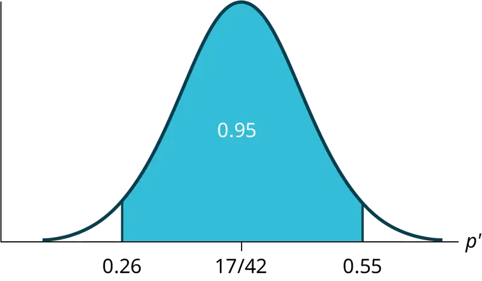
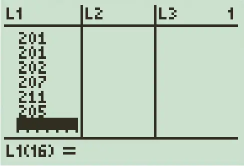
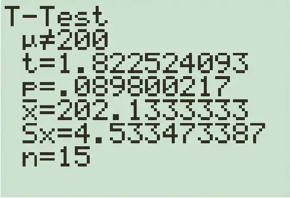
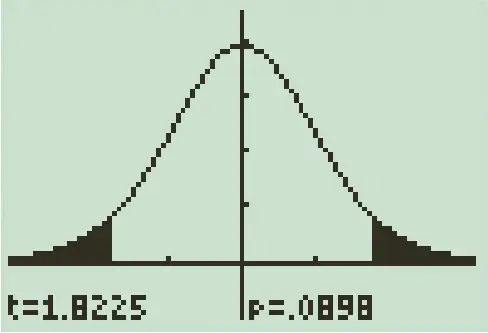
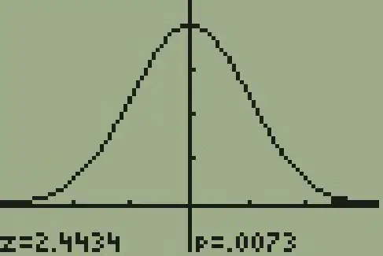
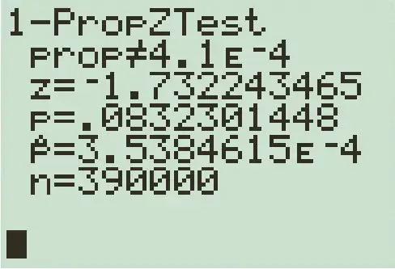
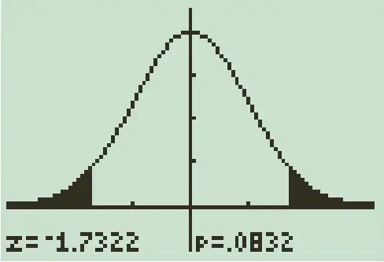
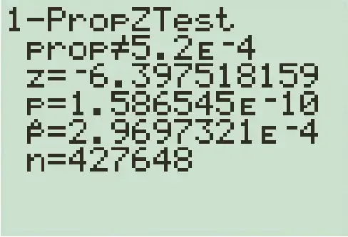
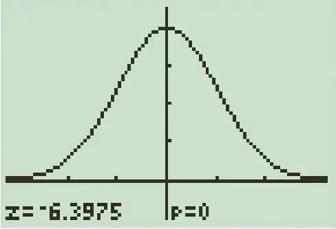

Chapter 9: Hypothesis Testing with One Sample¶
Introduction¶
Chapter Outline: Chapter Objectives
By the end of this chapter, the student should be able to:
- Differentiate between Type I and Type II Errors
- Describe hypothesis testing in general and in practice
- Conduct and interpret hypothesis tests for a single population mean, population standard deviation known.
- Conduct and interpret hypothesis tests for a single population mean, population standard deviation unknown.
- Conduct and interpret hypothesis tests for a single population proportion.
One job of a statistician is to make statistical inferences about populations based on samples taken from the population. Confidence intervals are one way to estimate a population parameter. Another way to make a statistical inference is to make a decision about a parameter. For instance, a car dealer advertises that its new small truck gets 35 miles per gallon, on average. A tutoring service claims that its method of tutoring helps 90% of its students get an A or a B. A company says that women managers in their company earn an average of $60,000 per year.
A statistician will make a decision about these claims. This process is called "hypothesis testing." A hypothesis test involves collecting data from a sample and evaluating the data. Then, the statistician makes a decision as to whether or not there is sufficient evidence, based upon analyses of the data, to reject the null hypothesis.
In this chapter, you will conduct hypothesis tests on single means and single proportions. You will also learn about the errors associated with these tests.
Hypothesis testing consists of two contradictory hypotheses or statements, a decision based on the data, and a conclusion. To perform a hypothesis test, a statistician will:
- Set up two contradictory hypotheses.
- Collect sample data (in homework problems, the data or summary statistics will be given to you).
- Determine the correct distribution to perform the hypothesis test.
- Analyze sample data by performing the calculations that ultimately will allow you to reject or decline to reject the null hypothesis.
- Make a decision and write a meaningful conclusion.
NOTE
To do the hypothesis test homework problems for this chapter and later chapters, make copies of the appropriate special solution sheets. See Appendix E.
9.1 Null and Alternative Hypotheses¶
The actual test begins by considering two hypotheses. They are called the null hypothesis and the alternative hypothesis. These hypotheses contain opposing viewpoints.
H0: The null hypothesis: It is a statement of no difference between the variables—they are not related. This can often be considered the status quo and as a result if you cannot accept the null it requires some action.
Ha: The alternative hypothesis: It is a claim about the population that is contradictory to H0 and what we conclude when we reject H0. This is usually what the researcher is trying to prove.
Since the null and alternative hypotheses are contradictory, you must examine evidence to decide if you have enough evidence to reject the null hypothesis or not. The evidence is in the form of sample data.
After you have determined which hypothesis the sample supports, you make a decision. There are two options for a decision. They are "reject H0" if the sample information favors the alternative hypothesis or "do not reject H0" or "decline to reject H0" if the sample information is insufficient to reject the null hypothesis.
Mathematical Symbols Used in H0 and Ha:
Table 9.1
| H0 | Ha |
|---|---|
| equal (=) | not equal (≠) or greater than (>) or less than (<) |
| greater than or equal to (≥) | less than (<) |
| less than or equal to (≤) | more than (>) |
NOTE
H0 always has a symbol with an equal in it. Ha never has a symbol with an equal in it. The choice of symbol depends on the wording of the hypothesis test. However, be aware that many researchers (including one of the co-authors in research work) use = in the null hypothesis, even with > or < as the symbol in the alternative hypothesis. This practice is acceptable because we only make the decision to reject or not reject the null hypothesis.
Example 9.1
H0: No more than 30% of the registered voters in Santa Clara County voted in the primary election. p ≤ .30
Ha: More than 30% of the registered voters in Santa Clara County voted in the primary election. p > 30
Try It
A medical trial is conducted to test whether or not a new medicine reduces cholesterol by 25%. State the null and alternative hypotheses.
Example 9.2
We want to test whether the mean GPA of students in American colleges is different from 2.0 (out of 4.0). The null and alternative hypotheses are:
H0: μ = 2.0
Ha: μ ≠ 2.0
Try It
We want to test whether the mean height of eighth graders is 66 inches. State the null and alternative hypotheses. Fill in the correct symbol (=, ≠, ≥, <, ≤, >) for the null and alternative hypotheses.
- H0: μ __ 66
- Ha: μ __ 66
Example 9.3
We want to test if college students take less than five years to graduate from college, on the average. The null and alternative hypotheses are:
H0: μ ≥ 5
Ha: μ < 5
Try It
We want to test if it takes fewer than 45 minutes to teach a lesson plan. State the null and alternative hypotheses. Fill in the correct symbol ( =, ≠, ≥, <, ≤, >) for the null and alternative hypotheses.
- H0: μ __ 45
- Ha: μ __ 45
Example 9.4
In an issue of U. S. News and World Report, an article on school standards stated that about half of all students in France, Germany, and Israel take advanced placement exams and a third pass. The same article stated that 6.6% of U.S. students take advanced placement exams and 4.4% pass. Test if the percentage of U.S. students who take advanced placement exams is more than 6.6%. State the null and alternative hypotheses.
H0: p ≤ 0.066
Ha: p > 0.066
Try It
On a state driver’s test, about 40% pass the test on the first try. We want to test if more than 40% pass on the first try. Fill in the correct symbol (=, ≠, ≥, <, ≤, >) for the null and alternative hypotheses.
- H0: p __ 0.40
- Ha: p __ 0.40
Collaborative Exercise
Bring to class a newspaper, some news magazines, and some Internet articles . In groups, find articles from which your group can write null and alternative hypotheses. Discuss your hypotheses with the rest of the class.
9.2 Outcomes and the Type I and Type II Errors¶
When you perform a hypothesis test, there are four possible outcomes depending on the actual truth (or falseness) of the null hypothesis H0 and the decision to reject or not. The outcomes are summarized in the following table:
Table 9.2
| ACTION | H0 IS ACTUALLY | ... |
|---|---|---|
| True | False | |
| Do not reject H0 | Correct Outcome | Type II error |
| Reject H0 | Type I Error | Correct Outcome |
The four possible outcomes in the table are:
- The decision is not to reject H0 when H0 is true (correct decision).
- The decision is to reject H0 when H0 is true (incorrect decision known as aType I error).
- The decision is not to reject H0 when, in fact, H0 is false (incorrect decision known as a Type II error).
- The decision is to reject H0 when H0 is false (correct decision whose probability is called the Power of the Test).
Each of the errors occurs with a particular probability. The Greek letters α and β represent the probabilities.
α = probability of a Type I error = P(Type I error) = probability of rejecting the null hypothesis when the null hypothesis is true.
β = probability of a Type II error = P(Type II error) = probability of not rejecting the null hypothesis when the null hypothesis is false.
α and β should be as small as possible because they are probabilities of errors. They are rarely zero.
The Power of the Test is 1 – β. Ideally, we want a high power that is as close to one as possible. Increasing the sample size can increase the Power of the Test.
The following are examples of Type I and Type II errors.
Example 9.5
Suppose the null hypothesis, H0, is: Navah's rock climbing equipment is safe.
Type I error: Navah thinks that her rock climbing equipment may not be safe when, in fact, it really is safe. Type II error: Navah thinks that her rock climbing equipment may be safe when, in fact, it is not safe.
α = probability that Navah thinks her rock climbing equipment may not be safe when, in fact, it really is safe. β = probability that Navah thinks her rock climbing equipment may be safe when, in fact, it is not safe.
Notice that, in this case, the error with the greater consequence is the Type II error. (If Navah thinks her rock climbing equipment is safe, she will go ahead and use it.)
Try It
Suppose the null hypothesis, H0, is: the blood cultures contain no traces of pathogen X. State the Type I and Type II errors.
Example 9.6
Suppose the null hypothesis, H0, is: The victim of an automobile accident is alive when they arrive at the emergency room of a hospital.
Type I error: The emergency crew thinks that the victim is dead when, in fact, the victim is alive. Type II error: The emergency crew does not know if the victim is alive when, in fact, the victim is dead.
α = probability that the emergency crew thinks the victim is dead when, in fact, the victim is really alive = P(Type I error). β = probability that the emergency crew does not know if the victim is alive when, in fact, the victim is dead = P(Type II error).
The error with the greater consequence is the Type I error. (If the emergency crew thinks the victim is dead, they will not treat them.)
Try It
Suppose the null hypothesis, H0, is: a patient is not sick. Which type of error has the greater consequence, Type I or Type II?
Example 9.7
A company called Genetic Labs claims to be able to increase the likelihood that a pregnancy will result in a male being born. Statisticians want to test the claim. Suppose that the null hypothesis, H0, is: Genetic Labs has no effect on sex outcome.
Type I error: This results when a true null hypothesis is rejected. In the context of this scenario, we would state that we believe that Genetic Labs influences the sex outcome, when in fact it has no effect. The probability of this error occurring is denoted by the Greek letter alpha, α.
Type II error: This results when we fail to reject a false null hypothesis. In context, we would state that Genetic Labs does not influence the sex outcome of a pregnancy when, in fact, it does. The probability of this error occurring is denoted by the Greek letter beta, β.
The error of greater consequence would be the Type I error since people would use the Genetic Labs product in hopes of increasing the chances of having a male.
Try It
“Red tide” is a bloom of poison-producing algae–a few different species of a class of plankton called dinoflagellates. When the weather and water conditions cause these blooms, shellfish such as clams living in the area develop dangerous levels of a paralysis-inducing toxin. In Massachusetts, the Division of Marine Fisheries (DMF) monitors levels of the toxin in shellfish by regular sampling of shellfish along the coastline. If the mean level of toxin in clams exceeds 800 μg (micrograms) of toxin per kg of clam meat in any area, clam harvesting is banned there until the bloom is over and levels of toxin in clams subside. Describe both a Type I and a Type II error in this context, and state which error has the greater consequence.
Example 9.8
A certain experimental drug claims a cure rate of at least 75% for males with prostate cancer. Describe both the Type I and Type II errors in context. Which error is the more serious?
Type I: A cancer patient believes the cure rate for the drug is less than 75% when it actually is at least 75%.
Type II: A cancer patient believes the experimental drug has at least a 75% cure rate when it has a cure rate that is less than 75%.
In this scenario, the Type II error contains the more severe consequence. If a patient believes the drug works at least 75% of the time, this most likely will influence the patient’s (and doctor’s) choice about whether to use the drug as a treatment option.
Try It
Determine both Type I and Type II errors for the following scenario:
Assume a null hypothesis, H0, that states the percentage of adults with jobs is at least 88%.
Identify the Type I and Type II errors from these four statements.
- Not to reject the null hypothesis that the percentage of adults who have jobs is at least 88% when that percentage is actually less than 88%
- Not to reject the null hypothesis that the percentage of adults who have jobs is at least 88% when the percentage is actually at least 88%.
- Reject the null hypothesis that the percentage of adults who have jobs is at least 88% when the percentage is actually at least 88%.
- Reject the null hypothesis that the percentage of adults who have jobs is at least 88% when that percentage is actually less than 88%.
9.3 Probability Distribution Needed for Hypothesis Testing¶
Earlier in the course, we discussed sampling distributions. Particular distributions are associated with various types of hypothesis testing.
The following table summarizes various hypothesis tests and corresponding probability distributions that will be used to conduct the test (based on the assumptions shown below):
Table 9.3
| Type of Hypothesis Test | Population Parameter | Estimated value (point estimate) | Probability Distribution Used |
|---|---|---|---|
| Hypothesis test for the mean, when the population standard deviation is known | Population mean \(\mu\) | Sample mean \(\bar{x}\) | Normal distribution, \(\bar{X}\sim N\left( \mu_{X},\frac{\sigma_{X}}{\sqrt{n}} \right)\) |
| Hypothesis test for the mean, when the population standard deviation is unknown and the distribution of the sample mean is approximately normal | Population mean \(\mu\) | Sample mean \(\bar{x}\) | Student’s t-distribution, \({t_{d}}_{f}\) |
| Hypothesis test for proportions | Population proportion \(p\) | Sample proportion \(p'\) | Normal distribution, \(P'\sim N\left( p,\sqrt{\frac{p\cdot q}{n}} \right)\) |
Assumptions¶
When you perform a hypothesis test of a single population mean μ using a normal distribution (often called a z-test), you take a simple random sample from the population. The population you are testing is normally distributed, or your sample size is sufficiently large. You know the value of the population standard deviation, which, in reality, is rarely known.
When you perform a hypothesis test of a single population mean μ using a Student's t-distribution (often called a t-test), there are fundamental assumptions that need to be met in order for the test to work properly. Your data should be a simple random sample that comes from a population that is approximately normally distributed. You use the sample standard deviation to approximate the population standard deviation. (Note that if the sample size is sufficiently large, a t-test will work even if the population is not approximately normally distributed).
When you perform a hypothesis test of a single population proportion p, you take a simple random sample from the population. You must meet the conditions for a binomial distribution: there are a certain number n of independent trials, the outcomes of any trial are success or failure, and each trial has the same probability of a success p. The shape of the binomial distribution needs to be similar to the shape of the normal distribution. To ensure this, the quantities np and nq must both be greater than five (\(np \gt 5\) and \(nq \gt 5\)). Then the binomial distribution of a sample (estimated) proportion can be approximated by the normal distribution with \(\mu=p\) and \(\sigma=\sqrt{\frac{pq}{n}}\). Remember that \(q=1-p\).
9.4 Rare Events, the Sample, Decision and Conclusion¶
Establishing the type of distribution, sample size, and known or unknown standard deviation can help you figure out how to go about a hypothesis test. However, there are several other factors you should consider when working out a hypothesis test.
Rare Events¶
Suppose you make an assumption about a property of the population (this assumption is the null hypothesis). Then you gather sample data randomly. If the sample has properties that would be very unlikely to occur if the assumption is true, then you would conclude that your assumption about the population is probably incorrect. (Remember that your assumption is just an assumption—it is not a fact and it may or may not be true. But your sample data are real and the data are showing you a fact that seems to contradict your assumption.)
For example, Didi and Ali are at a birthday party of a very wealthy friend. They hurry to be first in line to grab a prize from a tall basket that they cannot see inside because they will be blindfolded. There are 200 plastic bubbles in the basket and Didi and Ali have been told that there is only one with a $100 bill. Didi is the first person to reach into the basket and pull out a bubble. Her bubble contains a $100 bill. The probability of this happening is \(\frac{1}{200}\) = 0.005. Because this is so unlikely, Ali is hoping that what the two of them were told is wrong and there are more $100 bills in the basket. A "rare event" has occurred (Didi getting the $100 bill) so Ali doubts the assumption about only one $100 bill being in the basket.
Using the Sample to Test the Null Hypothesis¶
Use the sample data to calculate the actual probability of getting the test result, called the p-value. The p-value is the probability that, if the null hypothesis is true, the results from another randomly selected sample will be as extreme or more extreme as the results obtained from the given sample.
A large p-value calculated from the data indicates that we should not reject the null hypothesis. The smaller the p-value, the more unlikely the outcome, and the stronger the evidence is against the null hypothesis. We would reject the null hypothesis if the evidence is strongly against it.
Draw a graph that shows the p-value. The hypothesis test is easier to perform if you use a graph because you see the problem more clearly.
Example 9.9
Suppose a baker claims that his bread height is more than 15 cm, on average. Several of his customers do not believe him. To persuade his customers that he is right, the baker decides to do a hypothesis test. He bakes 10 loaves of bread. The mean height of the sample loaves is 17 cm. The baker knows from baking hundreds of loaves of bread that the standard deviation for the height is 0.5 cm. and the distribution of heights is normal.
The null hypothesis could be H0: μ ≤ 15 The alternate hypothesis is Ha: μ > 15
The words "is more than" translates as a ">" so "μ > 15" goes into the alternate hypothesis. The null hypothesis must contradict the alternate hypothesis.
By the Central Limit Theorem, the distribution of sample means, for samples of 10 loaves, will be normal with mean μ = 15 and standard deviation \(\frac{\sigma}{\sqrt{n}}=\frac{0.5}{\sqrt{10}}=0.16\).
Suppose the null hypothesis is true (the mean height of the loaves is no more than 15 cm). Then is the mean height (17 cm) calculated from the sample unexpectedly large? The hypothesis test works by asking the question how unlikely the sample mean would be if the null hypothesis were true. The graph shows how far out the sample mean is on the normal curve. The p-value is the probability that, if we were to take other samples, any other sample mean would fall at least as far out as 17 cm.
The p-value, then, is the probability that a sample mean is the same or greater than 17 cm. when the population mean is, in fact, 15 cm. We can calculate this probability using the normal distribution for means.
p-value= P(\(\bar{x}\) > 17) which is approximately zero.
A p-value of approximately zero tells us that it is highly unlikely that a loaf of bread rises no more than 15 cm, on average. That is, almost 0% of all loaves of bread would be at least as high as 17 cm. purely by CHANCE had the population mean height really been 15 cm. Because the outcome of 17 cm. is so unlikely (meaning it is happening NOT by chance alone), we conclude that the evidence is strongly against the null hypothesis (the mean height is at most 15 cm.). There is sufficient evidence that the true mean height for the population of the baker's loaves of bread is greater than 15 cm.
Try It
A normal distribution has a standard deviation of 1. We want to verify a claim that the mean is greater than 12. A sample of 36 is taken with a sample mean of 12.5.
H0: μ ≤ 12
Ha: μ > 12
The p-value is 0.0013
Draw a graph that shows the p-value.
Decision and Conclusion¶
A systematic way to make a decision of whether to reject or not reject the null hypothesis is to compare the p-value and a preset or preconceived α (also called a "significance level"). A preset α is the probability of a Type I error (rejecting the null hypothesis when the null hypothesis is true). It may or may not be given to you at the beginning of the problem.
When you make a decision to reject or not reject H0, do as follows:
- If α > p-value, reject H0. The results of the sample data are significant. There is sufficient evidence to conclude that H0 is an incorrect belief and that the alternative hypothesis, Ha, may be correct.
- If α ≤ p-value, do not reject H0. The results of the sample data are not significant.There is not sufficient evidence to conclude that the alternative hypothesis,Ha, may be correct.
- When you "do not reject H0", it does not mean that you should believe that H0 is true. It simply means that the sample data have failed to provide sufficient evidence to cast serious doubt about the truthfulness of Ho.
Conclusion: After you make your decision, write a thoughtful conclusion about the hypotheses in terms of the given problem.
Example 9.10
When using the p-value to evaluate a hypothesis test, it is sometimes useful to use the following memory device
If the p-value is low, the null must go.
If the p-value is high, the null must fly.
This memory aid relates a p-value less than the established alpha (the p is low) as rejecting the null hypothesis and, likewise, relates a p-value higher than the established alpha (the p is high) as not rejecting the null hypothesis.
Fill in the blanks.
Reject the null hypothesis when ______________________________________.
The results of the sample data _____________________________________.
Do not reject the null when hypothesis when __________________________________________.
The results of the sample data ____________________________________________.
Solution
Reject the null hypothesis when the p-value is less than the established alpha value. The results of the sample data support the alternative hypothesis.
Do not reject the null hypothesis when the p-value is greater than the established alpha value. The results of the sample data do not support the alternative hypothesis.
Try It
It’s a Boy Genetics Labs claim their procedures improve the chances of a boy being born. The results for a test of a single population proportion are as follows:
H0: p = 0.50, Ha: p > 0.50
α = 0.01
p-value = 0.025
Interpret the results and state a conclusion in simple, non-technical terms.
9.5 Additional Information and Full Hypothesis Test Examples¶
- In a hypothesis test problem, you may see words such as "the level of significance is 1%." The "1%" is the preconceived or preset α.
- The statistician setting up the hypothesis test selects the value of α to use before collecting the sample data.
- If no level of significance is given, a common standard to use is α = 0.05.
- When you calculate the p-value and draw the picture, the p-value is the area in the left tail, the right tail, or split evenly between the two tails. For this reason, we call the hypothesis test left, right, or two tailed.
- The alternative hypothesis, \(H_{a}\), tells you if the test is left, right, or two-tailed. It is the key to conducting the appropriate test.
- Hanever has a symbol that contains an equal sign.
- Thinking about the meaning of thep-value: A data analyst (and anyone else) should have more confidence that he made the correct decision to reject the null hypothesis with a smaller p-value (for example, 0.001 as opposed to 0.04) even if using the 0.05 level for alpha. Similarly, for a large p-value such as 0.4, as opposed to a p-value of 0.056 (alpha = 0.05 is less than either number), a data analyst should have more confidence that she made the correct decision in not rejecting the null hypothesis. This makes the data analyst use judgment rather than mindlessly applying rules.
The following examples illustrate a left-, right-, and two-tailed test.
Example 9.11
Ho: μ = 5, Ha: μ < 5
Test of a single population mean. Ha tells you the test is left-tailed. The picture of the p-value is as follows:
Try It
H0: μ = 10, Ha: μ < 10
Assume the p-value is 0.0935. What type of test is this? Draw the picture of the p-value.
Example 9.12
H0: p ≤ 0.2 Ha: p > 0.2
This is a test of a single population proportion. Ha tells you the test is right-tailed. The picture of the p-value is as follows:
Try It
H0: μ ≤ 1, Ha: μ > 1
Assume the p-value is 0.1243. What type of test is this? Draw the picture of the p-value.
Example 9.13
H0: p = 50 Ha: p ≠ 50
This is a test of a single population mean. Ha tells you the test is two-tailed. The picture of the p-value is as follows.
Try It
H0: p = 0.5, Ha: p ≠ 0.5
Assume the p-value is 0.2564. What type of test is this? Draw the picture of the p-value.
Full Hypothesis Test Examples¶
Example 9.14
Jeffrey, as an eight-year old, established a mean time of 16.43 seconds for swimming the 25-yard freestyle, with a standard deviation of 0.8 seconds. His dad, Frank, thought that Jeffrey could swim the 25-yard freestyle faster using goggles. Frank bought Jeffrey a new pair of expensive goggles and timed Jeffrey for 15 25-yard freestyle swims. For the 15 swims, Jeffrey's mean time was 16 seconds. Frank thought that the goggles helped Jeffrey to swim faster than the 16.43 seconds. Conduct a hypothesis test using a preset α = 0.05. Assume that the swim times for the 25-yard freestyle are normal.
Solution
Set up the Hypothesis Test:
Since the problem is about a mean, this is a test of a single population mean.
H0: μ = 16.43 Ha: μ < 16.43
For Jeffrey to swim faster, his time will be less than 16.43 seconds. The "<" tells you this is left-tailed.
Determine the distribution needed:
Random variable: \(\bar{X}\) = the mean time to swim the 25-yard freestyle.
Distribution for the test: \(\bar{X}\) is normal (population standard deviation is known: σ = 0.8)
\(\bar{X}\sim N\left( \mu,\frac{\sigma_{X}}{\sqrt{n}} \right)\) Therefore, \(\bar{X}\sim N\left( 16.43,\frac{0.8}{\sqrt{15}} \right)\)
μ = 16.43 comes from H0 and not the data. σ = 0.8, and n = 15.
Calculate the p-value using the normal distribution for a mean:
p-value = P(\(\bar{x}\) < 16) = 0.0187 where the sample mean in the problem is given as 16.
p-value = 0.0187 (This is called the actual level of significance.) The p-value is the area to the left of the sample mean is given as 16.
Graph:
μ = 16.43 comes from H0. Our assumption is μ = 16.43.
Interpretation of the p-value: If H0 is true, there is a 0.0187 probability (1.87%)that Jeffrey's mean time to swim the 25-yard freestyle is 16 seconds or less. Because a 1.87% chance is small, the mean time of 16 seconds or less is unlikely to have happened randomly. It is a rare event.
Compare α and the p-value:
α = 0.05 p-value = 0.0187 α > p-value
Make a decision: Since \(\alpha \gt\)p-value, reject H0.
This indicates that you reject the null hypothesis that the mean time to swim the 25-yard freestyle is at least 16.43 seconds.
Conclusion: At the 5% significance level, there is sufficient evidence that Jeffrey's mean time to swim the 25-yard freestyle is less than 16.43 seconds. Thus, based on the sample data, we conclude that Jeffrey swims faster using the new goggles.
The Type I and Type II errors for this problem are as follows:
The Type I error is to conclude that Jeffrey swims the 25-yard freestyle, on average, in less than 16.43 seconds when, in fact, he actually swims the 25-yard freestyle, on average, in at least 16.43 seconds. (Reject the null hypothesis when the null hypothesis is true.)
The Type II error is that there is not evidence to conclude that Jeffrey swims the 25-yard freestyle, on average, in less than 16.43 seconds when, in fact, he actually does swim the 25-yard free-style, on average, in less than 16.43 seconds. (Do not reject the null hypothesis when the null hypothesis is false.)
Using the Calculator
Press STAT and arrow over to TESTS. Press 1:Z-Test. Arrow over to Stats and press ENTER. Arrow down and enter 16.43 for μ0 (null hypothesis), .8 for σ, 16 for the sample mean, and 15 for n. Arrow down to μ : (alternate hypothesis) and arrow over to < μ0. Press ENTER. Arrow down to Calculate and press ENTER. The calculator not only calculates the p-value (p = 0.0187) but it also calculates the test statistic (z-score) for the sample mean. μ < 16.43 is the alternative hypothesis. Do this set of instructions again except arrow to Draw(instead of Calculate). Press ENTER. A shaded graph appears with z = -2.08 (test statistic) and p = 0.0187 (p-value). Make sure when you use Draw that no other equations are highlighted in Y = and the plots are turned off.
Try It
The mean throwing distance of a football for Marco, a high school quarterback, is 40 yards, with a standard deviation of two yards. The team coach tells Marco to adjust his grip to get more distance. The coach records the distances for 20 throws. For the 20 throws, Marco’s mean distance was 45 yards. The coach thought the different grip helped Marco throw farther than 40 yards. Conduct a hypothesis test using a preset α = 0.05. Assume the throw distances for footballs are normal.
First, determine what type of test this is, set up the hypothesis test, find the p-value, sketch the graph, and state your conclusion.
Using the Calculator
Press STAT and arrow over to TESTS. Press 1:Z-Test. Arrow over to Stats and press ENTER. Arrow down and enter 40 for μ0 (null hypothesis), 2 for σ, 45 for the sample mean, and 20 for n. Arrow down to μ: (alternative hypothesis) and set it either as <, ≠, or >. Press ENTER. Arrow down to Calculate and press ENTER. The calculator not only calculates the p-value but it also calculates the test statistic (z-score) for the sample mean. Select <, ≠, or > for the alternative hypothesis. Do this set of instructions again except arrow to Draw (instead of Calculate). Press ENTER. A shaded graph appears with test statistic and p-value. Make sure when you use Draw that no other equations are highlighted in Y = and the plots are turned off.
Historical Note (Example 9.14)
The traditional way to compare the two probabilities, α and the p-value, is to compare the critical value (z-score from α) to the test statistic (z-score from data). The calculated test statistic for the p-value is –2.08. (From the Central Limit Theorem, the test statistic formula is \(z=\frac{\bar{x}-\mu_{X}}{(\frac{\sigma_{X}}{\sqrt{n}})}\). For this problem, \(\bar{x}\) = 16, μX = 16.43 from the null hypothes is, σX = 0.8, and n = 15.) You can find the critical value for α = 0.05 in the normal table (see 15.Tables in the Table of Contents). The z-score for an area to the left equal to 0.05 is midway between –1.65 and –1.64 (0.05 is midway between 0.0505 and 0.0495). The z-score is –1.645. Since –1.645 > –2.08 (which demonstrates that α > p-value), reject H0. Traditionally, the decision to reject or not reject was done in this way. Today, comparing the two probabilities α and the p-value is very common. For this problem, the p-value, 0.0187 is considerably smaller than α, 0.05. You can be confident about your decision to reject. The graph shows α, the p-value, and the test statistic and the critical value.
Example 9.15
A college football coach records the mean weight that the players can bench press as 275 pounds, with a standard deviation of 55 pounds. Three of the players thought that the mean weight was more than that amount. They asked 30 of their teammates for their estimated maximum lift on the bench press exercise. The data ranged from 205 pounds to 385 pounds. The actual different weights were (frequencies are in parentheses)
205(3)
215(3)
225(1)
241(2)
252(2)
265(2)
275(2)
313(2)
316(5)
338(2)
341(1)
345(2)
368(2)
385(1)
.
Conduct a hypothesis test using a 2.5% level of significance to determine if the bench press mean is more than 275 pounds.
Solution
Set up the Hypothesis Test:
Since the problem is about a mean weight, this is a test of a single population mean.
H0: μ = 275
Ha: μ > 275
This is a right-tailed test.
Calculating the distribution needed:
Random variable: \(\bar{X}\) = the mean weight, in pounds, lifted by the football players.
Distribution for the test: It is normal because σ is known.
\(\bar{X}\sim N\left( 275,\frac{55}{\sqrt{30}} \right)\)
\(\bar{x}=286.2\) pounds (from the data).
σ = 55 pounds (Always use σ if you know it.) We assume μ = 275 pounds unless our data shows us otherwise.
Calculate the p-value using the normal distribution for a mean and using the sample mean as input (see Appendix G NOTEs for the TI-83, 83+, 84, 84+ Calculators for using the data as input):
\(p\text{-value}=P(\bar{x} \gt 286.2)=0.1323\).
Interpretation of the p-value: If H0 is true, then there is a 0.1331 probability (13.23%) that the football players can lift a mean weight of 286.2 pounds or more. Because a 13.23% chance is large enough, a mean weight lift of 286.2 pounds or more is not a rare event.
Compare α and the p-value:
α = 0.025 p-value = 0.1323
Make a decision: Since α <p-value, do not reject H0.
Conclusion: At the 2.5% level of significance, from the sample data, there is not sufficient evidence to conclude that the true mean weight lifted is more than 275 pounds.
Using the Calculator
Put the data and frequencies into lists. Press STAT and arrow over to TESTS. Press 1:Z-Test. Arrow over to Data and press ENTER. Arrow down and enter 275 for μ0, 55 for σ, the name of the list where you put the data, and the name of the list where you put the frequencies. Arrow down to μ: and arrow over to > μ0. Press ENTER. Arrow down to Calculate and press ENTER. The calculator not only calculates the p-value (p = 0.1331, a little different from the previous calculation - in it we used the sample mean rounded to one decimal place instead of the data) but it also calculates the test statistic (z-score) for the sample mean, the sample mean, and the sample standard deviation. μ > 275 is the alternative hypothesis. Do this set of instructions again except arrow to Draw (instead of Calculate). Press ENTER. A shaded graph appears with z = 1.112 (test statistic) and p = 0.1331 (p-value). Make sure when you use Draw that no other equations are highlighted in Y = and the plots are turned off.
Try It
A company records the mean time of employees working in a day. The mean comes out to be 475 minutes, with a standard deviation of 45 minutes. A manager recorded times of 20 employees. The times of working were (frequencies are in parentheses) 460(3); 465(2); 470(3); 475(1); 480(6); 485(3); 490(2).
Conduct a hypothesis test using a 2.5% level of significance to determine if the mean time is more than 475.
Answer
Set up the Hypothesis Test:
This is a right-tailed test. The random variable \(\overline{X}\) is the mean time of employees working in a day.
Distribution for the test: \(\sigma\) is known.
\(\bar{x}=475.5\) minutes (from the data).
\(\sigma=45\) minutes. We assume \(\mu=475\) minutes unless our data shows otherwise.
The p-value is calculated: p-value = \(P(\bar{x} \gt 475.5)=0.5044\)
Interpretation of p-value: If \(H_{0}\) is true, then there is a 0.5044, or 50.44%, chance that the mean time of employees working is 475.5 minutes or more. Since a 50.44% chance is large enough, the mean time of 475.5 is not a rare event.
Compare \(\alpha\) and p values:
\(\alpha=0.025\) and \(p=0.5044\)
Make a decision: Since \(\alpha \lt p\) value, do not reject \(H_{0}\).
Conclusion: At the 2.5% level of significance, from the sample data, there is not sufficient evidence to conclude that the true mean time of employees is more than 475 minutes.
Example 9.16
Statistics students believe that the mean score on the first statistics test is 65. A statistics instructor thinks the mean score is higher than 65. He samples ten statistics students and obtains the scores
65
65
70
67
66
63
63
68
72
71
. He performs a hypothesis test using a 5% level of significance. The data are assumed to be from a normal distribution.
Solution
Set up the hypothesis test:
A 5% level of significance means that α = 0.05. This is a test of a single population mean.
H0: μ = 65 Ha: μ > 65
Since the instructor thinks the average score is higher, use a ">". The ">" means the test is right-tailed.
Determine the distribution needed:
Random variable: \(\bar{X}\) = average score on the first statistics test.
Distribution for the test: If you read the problem carefully, you will notice that there is no population standard deviation given. You are only given n = 10 sample data values. Notice also that the data come from a normal distribution. This means that the distribution for the test is a student's t.
Use tdf. Therefore, the distribution for the test is t9 where n = 10 and df = 10 - 1 = 9.
Calculate the p-value using the Student's t-distribution:
p-value = P(\(\bar{x}\) > 67) = 0.0396 where the sample mean and sample standard deviation are calculated as 67 and 3.1972 from the data.
Interpretation of the p-value: If the null hypothesis is true, then there is a 0.0396 probability (3.96%) that the sample mean is 67 or more.
Compare α and the p-value:
Since α = 0.05 and p-value = 0.0396. α > p-value.
Make a decision: Since α > p-value, reject H0.
This means you reject μ = 65. In other words, you believe the average test score is greater than 65.
Conclusion: At a 5% level of significance, the sample data show sufficient evidence that the mean (average) test score is greater than 65, just as the math instructor thinks.
Using the Calculator
Put the data into a list. Press STAT and arrow over to TESTS. Press 2:T-Test. Arrow over to Data and press ENTER. Arrow down and enter 65 for μ0, the name of the list where you put the data, and 1 for Freq:. Arrow down to μ: and arrow over to > μ0. Press ENTER. Arrow down to Calculate and press ENTER. The calculator not only calculates the p-value (p = 0.0396) but it also calculates the test statistic (t-score) for the sample mean, the sample mean, and the sample standard deviation. μ > 65 is the alternative hypothesis. Do this set of instructions again except arrow to Draw (instead of Calculate). Press ENTER. A shaded graph appears with t = 1.9781 (test statistic) and p = 0.0396 (p-value). Make sure when you use Draw that no other equations are highlighted in Y = and the plots are turned off.
Try It
It is believed that a stock price for a particular company will grow at a rate of $5 per week with a standard deviation of $1. An investor believes the stock won’t grow as quickly. The changes in stock price is recorded for ten weeks and are as follows: $4, $3, $2, $3, $1, $7, $2, $1, $1, $2. Perform a hypothesis test using a 5% level of significance. State the null and alternative hypotheses, find the p-value, state your conclusion, and identify the Type I and Type II errors.
Example 9.17
Joon believes that 50% of first-time brides in the United States are younger than their grooms. She performs a hypothesis test to determine if the percentage is the same or different from 50%. Joon samples 100 first-time brides and 53 reply that they are younger than their grooms. For the hypothesis test, she uses a 1% level of significance.
Solution
Set up the hypothesis test:
The 1% level of significance means that α = 0.01. This is a test of a single population proportion.
H0: p = 0.50 Ha: p ≠ 0.50
The words "is the same or different from" tell you this is a two-tailed test.
Calculate the distribution needed:
Random variable: P′ = the percent of of first-time brides who are younger than their grooms.
Distribution for the test: The problem contains no mention of a mean. The information is given in terms of percentages. Use the distribution for P′, the estimated proportion.
\(P'\sim N\left( p,\sqrt{\frac{p\cdot q}{n}} \right)\) Therefore, \(P'\sim N\left( 0.5,\sqrt{\frac{0.5\cdot 0.5}{100}} \right)\)
where p = 0.50, q = 1−p = 0.50, and n = 100
Calculate the p-value using the normal distribution for proportions:
p-value = P (p′ < 0.47 or p′ > 0.53) = 0.5485
where x = 53, p′ = \(\frac{x}{n}\ \text{=}\ \frac{53}{100}\) = 0.53.
Interpretation of the p-value: If the null hypothesis is true, there is 0.5485 probability (54.85%) that the sample (estimated) proportion \(p'\) is 0.53 or more OR 0.47 or less (see the graph in Figure 9.10).
μ = p = 0.50 comes from H0, the null hypothesis.
p′ = 0.53. Since the curve is symmetrical and the test is two-tailed, the p′ for the left tail is equal to 0.50 – 0.03 = 0.47 where μ = p = 0.50. (0.03 is the difference between 0.53 and 0.50.)
Compare α and the p-value:
Since α = 0.01 and p-value = 0.5485. α < p-value.
Make a decision: Since α < p-value, you cannot reject H0.
Conclusion: At the 1% level of significance, the sample data do not show sufficient evidence that the percentage of first-time brides who are younger than their grooms is different from 50%.
Using the Calculator
Press STAT and arrow over to TESTS. Press 5:1-PropZTest. Enter .5 for p0, 53 for x and 100 for n. Arrow down to Prop and arrow to not equals p0. Press ENTER. Arrow down to Calculate and press ENTER. The calculator calculates the p-value (p = 0.5485) and the test statistic (z-score). Prop not equals .5 is the alternate hypothesis. Do this set of instructions again except arrow to Draw (instead of Calculate). Press ENTER. A shaded graph appears with z = 0.6 (test statistic) and p = 0.5485 (p-value). Make sure when you use Draw that no other equations are highlighted in Y = and the plots are turned off.
The Type I and Type II errors are as follows:
The Type I error is to conclude that the proportion of first-time brides who are younger than their grooms is different from 50% when, in fact, the proportion is actually 50%. (Reject the null hypothesis when the null hypothesis is true).
The Type II error is there is not enough evidence to conclude that the proportion of first time brides who are younger than their grooms differs from 50% when, in fact, the proportion does differ from 50%. (Do not reject the null hypothesis when the null hypothesis is false.)
Try It
A teacher believes that 85% of students in the class will want to go on a field trip to the local zoo. The teacher performs a hypothesis test to determine if the percentage is the same or different from 85%. The teacher samples 50 students and 39 reply that they would want to go to the zoo. For the hypothesis test, use a 1% level of significance.
First, determine what type of test this is, set up the hypothesis test, find the p-value, sketch the graph, and state your conclusion.
Example 9.18
Suppose a consumer group suspects that the proportion of households that have three cell phones is 30%. A cell phone company has reason to believe that the proportion is not 30%. Before they start a big advertising campaign, they conduct a hypothesis test. Their marketing people survey 150 households with the result that 43 of the households have three cell phones.
a. The value that helps determine the p-value is p′. Calculate p′.
b. What is a success for this problem?
c. What is the level of significance?
d. Draw the graph for this problem. Draw the horizontal axis. Label and shade appropriately.
Calculate the p-value.
e. Make a decision. _____________(Reject/Do not reject) H0 because____________.
Solution
Set up the Hypothesis Test:
H0: p = 0.30 Ha: p ≠ 0.30
Determine the distribution needed:
The random variable is P′ = proportion of households that have three cell phones.
The distribution for the hypothesis test is \(P'\sim N\left( 0.30,\sqrt{\frac{(0.30)\cdot(0.70)}{150}} \right)\)
a. p′ = \(\frac{x}{n}\) where x is the number of successes and n is the total number in the sample.
x = 43, n = 150
p′ = \(\frac{43}{150}\)
b. A success is having three cell phones in a household.
c. The level of significance is the preset α. Since α is not given, assume that α = 0.05.
d. p-value = 0.7216
e. Assuming that α = 0.05, α < p-value. The decision is do not reject H0 because there is not sufficient evidence to conclude that the proportion of households that have three cell phones is not 30%.
Try It
Marketers believe that 92% of adults in the United States own a cell phone. A cell phone manufacturer believes that number is actually lower. 200 American adults are surveyed, of which, 174 report having cell phones. Use a 5% level of significance. State the null and alternative hypothesis, find the p-value, state your conclusion, and identify the Type I and Type II errors.
The next example is a poem written by a statistics student named Nicole Hart. The solution to the problem follows the poem. Notice that the hypothesis test is for a single population proportion. This means that the null and alternate hypotheses use the parameter p. The distribution for the test is normal. The estimated proportion p′ is the proportion of fleas killed to the total fleas found on Fido. This is sample information. The problem gives a preconceived α = 0.01, for comparison, and a 95% confidence interval computation. The poem is clever and humorous, so please enjoy it!
Example 9.19
My dog has so many fleas,
They do not come off with ease.
As for shampoo, I have tried many types
Even one called Bubble Hype,
Which only killed 25% of the fleas,
Unfortunately I was not pleased.
I've used all kinds of soap,
Until I had given up hope
Until one day I saw
An ad that put me in awe.
A shampoo used for dogs
Called GOOD ENOUGH to Clean a Hog
Guaranteed to kill more fleas.
I gave Fido a bath
And after doing the math
His number of fleas
Started dropping by 3's!
Before his shampoo
I counted 42.
At the end of his bath,
I redid the math
And the new shampoo had killed 17 fleas.
So now I was pleased.
Now it is time for you to have some fun
With the level of significance being .01,
You must help me figure out
Use the new shampoo or go without?
Solution
Set up the hypothesis test:
H0: p ≤ 0.25 Ha: p > 0.25
Determine the distribution needed:
In words, CLEARLY state what your random variable \(\bar{X}\) or P′ represents.
P′ = The proportion of fleas that are killed by the new shampoo
State the distribution to use for the test.
Normal: \(N\left( 0.25,\sqrt{\frac{(0.25)(1-0.25)}{42}} \right)\)
Test Statistic: z = 2.3163
Calculate the p-value using the normal distribution for proportions:
p-value = 0.0103
In one to two complete sentences, explain what the p-value means for this problem.
If the null hypothesis is true (the proportion is 0.25), then there is a 0.0103 probability that the sample (estimated) proportion is 0.4048 \(\left( \frac{17}{42} \right)\) or more.
Use the previous information to sketch a picture of this situation. CLEARLY, label and scale the horizontal axis and shade the region(s) corresponding to the p-value.
Compare α and the p-value:
Indicate the correct decision (“reject” or “do not reject” the null hypothesis), the reason for it, and write an appropriate conclusion, using complete sentences.
Table 9.4
| alpha | decision | reason for decision |
|---|---|---|
| 0.01 | Do not reject \(H_{0}\) | α < p-value |
Conclusion: At the 1% level of significance, the sample data do not show sufficient evidence that the percentage of fleas that are killed by the new shampoo is more than 25%.
Construct a 95% confidence interval for the true mean or proportion. Include a sketch of the graph of the situation. Label the point estimate and the lower and upper bounds of the confidence interval.

Confidence Interval: (0.26,0.55) We are 95% confident that the true population proportion p of fleas that are killed by the new shampoo is between 26% and 55%.
NOTE
This test result is not very definitive since the p-value is very close to alpha. In reality, one would probably do more tests by giving the dog another bath after the fleas have had a chance to return.
Try It
A car soap gets rid of 30% of stains on the car. After adding a new compound to the soap, the soap is used on a car and found to wash 20 stains out of the 50 stains on the car. With the level of significance being 0.01, find out if adding the new compound to soap is beneficial.
Answer
Set up hypothesis test:
\(H_{0}:p\le 0.3\) \(H_{0}:p \gt 0.3\)
The distribution to use for the test is:
Normal: \(N\left( 0.3,\sqrt{\frac{(0.3)(1-0.3)}{50}} \right)\)
The test statistic is obtained to be z = 1.543.
The p-value is obtained to be p = 0.0614.
If the null hypothesis is true, then there is a 0.0614 probability that the sample proportion is 0.4 \(\left( \frac{20}{50} \right)\) or more.
At 1% level of significance, the value of \(\alpha\) is less than the p-value. So, the data does not show sufficient evidence that the percentage of stains removed is more than 30%.
The confidence interval is obtained as (0.273, 0.527).
Example 9.20
The National Institute of Standards and Technology provides exact data on conductivity properties of materials. Following are conductivity measurements for 11 randomly selected pieces of a particular type of glass.
1.11; 1.07; 1.11; 1.07; 1.12; 1.08; .98; .98; 1.02; .95; .95
Is there convincing evidence that the average conductivity of this type of glass is greater than one? Use a significance level of 0.05. Assume the population is normal.
Solution
Let’s follow a four-step process to answer this statistical question.
-
State the Question: We need to determine if, at a 0.05 significance level, the average conductivity of the selected glass is greater than one. Our hypotheses will be
a. H0: μ ≤ 1
b. Ha: μ > 1
-
Plan: We are testing a sample mean without a known population standard deviation. Therefore, we need to use a Student's t-distribution. Assume the underlying population is normal.
-
Based on the sample of 11 data values shown above, sample mean, sample standard deviation, and test statistic are calculated as follows:
\[ \begin{array}{rcl} \bar{x} & = & 1.04 \\ s & = & 0.0659 \\ t & = & 2.014 \end{array} \]To calculate the p-value, note that this is a right-tailed test. Then, find the area under the t-distribution to the right of the test statistic 2.014 (using 10 degrees of freedom). This area in the right tail is 0.036, and thus the p-value = 0.036.
-
State the Conclusions: Since the p-value (p = 0.036) is less than our alpha value, we will reject the null hypothesis. It is reasonable to state that the data supports the claim that the average conductivity level is greater than one.
Try It
The boiling point of a specific liquid is measured for 15 samples, and the boiling points are obtained as follows:
205; 206; 206; 202; 199; 194; 197; 198; 198; 201; 201; 202; 207; 211; 205
Is there convincing evidence that the average boiling point is greater than 200? Use a significance level of 0.1. Assume the population is normal.
Answer
The hypotheses, at a significance level of 0.1, will be as follows:
- \(H_{0}:\mu\le 200\)
- \(H_{0}:\mu \gt 200\)
Since the standard deviation is not known, Student’s t-distribution is to be used.
The data is input into the TI-83 as follows:



Since the p-value is less than alpha value, we will reject the null hypothesis. It is reasonable to state that the data supports the claim that the average boiling point is greater than 200.
Example 9.21
In a study of 420,019 cell phone users, 172 of the subjects developed brain cancer. Test the claim that cell phone users developed brain cancer at a greater rate than that for non-cell phone users (the rate of brain cancer for non-cell phone users is 0.0340%). Since this is a critical issue, use a 0.005 significance level. Explain why the significance level should be so low in terms of a Type I error.
Solution
We will follow the four-step process.
1. We need to conduct a hypothesis test on the claimed cancer rate. Our hypotheses will be
a. H0: p ≤ 0.00034
b. Ha: p > 0.00034
If we commit a Type I error, we are essentially accepting a false claim. Since the claim describes cancer-causing environments, we want to minimize the chances of incorrectly identifying causes of cancer.
2. We will be testing a sample proportion with x = 172 and n = 420,019. The sample is sufficiently large because we have np = 420,019(0.00034) = 142.8, nq = 420,019(0.99966) = 419,876.2, two independent outcomes, and a fixed probability of success p = 0.00034. Thus we will be able to generalize our results to the population.
3. The associated TI results are

4. Since the p-value = 0.0073 is greater than our alpha value = 0.005, we cannot reject the null. Therefore, we conclude that there is not enough evidence to support the claim of higher brain cancer rates for the cell phone users.
Try It
In a study of 390,000 moisturizer users, 138 of the subjects developed skin diseases. Test the claim that moisturizer users developed skin diseases at a greater rate than that for non-moisturizer users (the rate of skin diseases for non-moisturizer users is 0.041%). Since this is a critical issue, use a 0.005 significance level. Explain why the significance level should be so low in terms of a Type I error.
Answer
The test hypotheses are as follows:
- \(H_{0}:p\le 0.00041\)
- \(H_{0}:p \gt 0.00041\)
If we commit a Type I error, we are essentially accepting a false claim. Since the claim describes disease-causing environments, we want to minimize the chances of incorrectly identifying causes of diseases. The testing will be done with x = 138 and n = 390,000. The sample is sufficiently large because we have np = 390,000(0.00041) = 159.9, nq = 390,000(0.99959) = 389,840.1, two independent outcomes, and a fixed probability of success p = 0.00041. Thus, we will be able to generalize our results to the population.
The associated TI results are:


Since the p-value = 0.0832 is greater than alpha value = 0.005, we cannot reject the null. Therefore, we conclude that there is not enough evidence to support the claim of higher skin diseases rates for moisturizer users.
Example 9.22
Statistical data indicates that in a certain country there are approximately 268,608,618 residents aged 12 and older. For a certain period of time, statistical data also indicates that the percentage of residents with blood type AB negative (AB-) is 207,754 individuals. This translates into a percentage of 0.078% with this rather rare blood type. In a certain province of the country, there were 11 people with blood type AB- out of the population of 37,937. Conduct an appropriate hypothesis test to determine if there is a statistically significant difference between the percentage of residents in the entire country with blood type AB- versus the percentage in the local province. Use a significance level of 0.01.
Solution
We will follow the four-step plan.
-
We need to test whether the proportion of residents with AB- blood type in the local province is statistically different as compared to the proportion in the entire country.
-
Since we are presented with proportions, we will use a one-proportion z-test. The hypotheses for the test will be:
\[ \begin{array}{rcl} H_{0}∶p & = & 0.00078 \\ H_{a}∶p & \neq & 0.00078 \end{array} \] -
Note the sample proportion is \(\begin{array}{rcl} p' & = & \frac{11}{37,937}=0.00029 \end{array}\)
The test statistic is calculated as z = -3.4189. To calculate the p-value, note that this is a two-tailed test. Find the area under the normal distribution to the left of the test statistic and then double this area. The area to the left of the test statistic is 0.000314, and this area doubled results in the p-value of 0.00063.
-
Since the p-value, p = 0.00063, is less than the alpha level of 0.01, the sample data indicates that we should reject the null hypothesis. In conclusion, the sample data support the claim that the proportion of individuals with blood type AB- in the local province is different from the proportion of individuals in the entire country.
Try It
According to the U.S. Census, there are approximately 201,456,463 residents 20 and older. Statistics from the Criminal National Network indicate that, on average, 104,354 murders occur each year for people aged 20 and older. This translates into a percentage of murder of 0.052%. In Ohio, there were reported 127 murders for a population of 427,648. Conduct an appropriate hypothesis test to determine if there is a statistically significant difference between the local murder percentage and the national murder percentage. Use a significance level of 0.01.
Answer
The hypotheses for the one-proportion z-test are as follow:
- \(H_{0}:p\le 0.00052\)
- \(H_{0}:p \gt 0.00052\)
The following screenshots display the summary statistics from the hypothesis test:


Since the p-value = 0 is less than alpha value of 0.01, the sample data includes that we should reject the null hypothesis. In conclusion, the sample data support the claim that the proportion of murders in Ohio is different from the national average population.
9.6 Hypothesis Testing of a Single Mean and Single Proportion¶
Lab: Hypothesis Testing of a Single Mean and Single Proportion
Class Time:
Names:
Student Learning Outcomes
- The student will select the appropriate distributions to use in each case.
- The student will conduct hypothesis tests and interpret the results.
Television Survey
In a recent survey, it was stated that Americans watch television on average four hours per day. Assume that σ = 2. Using your class as the sample, conduct a hypothesis test to determine if the average for students at your school is lower.
1. H0: _____________
2. Ha: _____________
3. In words, define the random variable. __________ = ______________________
4. The distribution to use for the test is _______________________.
5. Determine the test statistic using your data.
6. Draw a graph and label it appropriately. Shade the actual level of significance.
a. Graph:

b. Determine the p-value.
7. Do you or do you not reject the null hypothesis? Why?
8. Write a clear conclusion using a complete sentence.
Language Survey
About 42.3% of Californians and 19.6% of all Americans over age five speak a language other than English at home. Using your class as the sample, conduct a hypothesis test to determine if the percent of the students at your school who speak a language other than English at home is different from 42.3%.
1. H0: ___________
2. Ha: ___________
3. In words, define the random variable. __________ = _______________
4. The distribution to use for the test is ________________
5. Determine the test statistic using your data.
6. Draw a graph and label it appropriately. Shade the actual level of significance.
a. Graph:

b. Determine the p-value.
7. Do you or do you not reject the null hypothesis? Why?
8. Write a clear conclusion using a complete sentence.
Jeans Survey
Suppose that young adults own an average of three pairs of jeans. Survey eight people from your class to determine if the average is higher than three. Assume the population is normal.
1. H0: _____________
2. Ha: _____________
3. In words, define the random variable. __________ = ______________________
4. The distribution to use for the test is _______________________.
5. Determine the test statistic using your data.
6. Draw a graph and label it appropriately. Shade the actual level of significance.
a. Graph:

b. Determine the p-value.
7. Do you or do you not reject the null hypothesis? Why?
8. Write a clear conclusion using a complete sentence.
Chapter Review¶
Key Terms¶
- Binomial Distribution
- a discrete random variable (RV) that arises from Bernoulli trials. There are a fixed number, n, of independent trials. “Independent” means that the result of any trial (for example, trial 1) does not affect the results of the following trials, and all trials are conducted under the same conditions. Under these circumstances the binomial RV Χ is defined as the number of successes in n trials. The notation is: X ~ B(n, p) μ = np and the standard deviation is \(\sigma=\sqrt{npq}\). The probability of exactly x successes in n trials is \(P(X=x)=\left( \begin{array}{c} n \\ x \end{array} \right)p^{x}q^{n-x}\).
- Central Limit Theorem
- Given a random variable (RV) with known mean \(\mu\) and known standard deviation σ. We are sampling with size n and we are interested in two new RVs - the sample mean, \(\bar{X}\), and the sample sum, \(\Sigma X\). If the size n of the sample is sufficiently large, then \(\bar{X}\sim N\left( \mu{,}\frac{\sigma}{\sqrt{n}} \right)\) and \(\Sigma X\sim N(n\mu,\sqrt{n}\sigma)\). If the size n of the sample is sufficiently large, then the distribution of the sample means and the distribution of the sample sums will approximate a normal distribution regardless of the shape of the population. The mean of the sample means will equal the population mean and the mean of the sample sums will equal n times the population mean. The standard deviation of the distribution of the sample means, \(\frac{\sigma}{\sqrt{n}}\), is called the standard error of the mean.
- Confidence Interval (CI)
- an interval estimate for an unknown population parameter. This depends on: The desired confidence level.; Information that is known about the distribution (for example, known standard deviation).; The sample and its size.
- Hypothesis
- a statement about the value of a population parameter, in case of two hypotheses, the statement assumed to be true is called the null hypothesis (notation H0) and the contradictory statement is called the alternative hypothesis (notation Ha).
- Hypothesis Testing
- Based on sample evidence, a procedure for determining whether the hypothesis stated is a reasonable statement and should not be rejected, or is unreasonable and should be rejected.
- Level of Significance of the Test
- probability of a Type I error (reject the null hypothesis when it is true). Notation: α. In hypothesis testing, the Level of Significance is called the preconceived α or the preset α.
- Normal Distribution
- a continuous random variable (RV) with pdf \(f(x)=\frac{1}{\sigma\sqrt{2\pi}}e^{\frac{-{(x-\mu)}^{2}}{2\sigma^{2}}}\), where μ is the mean of the distribution, and σ is the standard deviation, notation: X ~ N(μ, σ). If μ = 0 and σ = 1, the RV is called the standard normal distribution.
- p-value
- the probability that an event will happen purely by chance assuming the null hypothesis is true. The smaller the p-value, the stronger the evidence is against the null hypothesis.
- Standard Deviation
- a number that is equal to the square root of the variance and measures how far data values are from their mean; notation: s for sample standard deviation and σ for population standard deviation.
- Student's t-Distribution
- investigated and reported by William S. Gossett in 1908 and published under the pseudonym Student. The major characteristics of the random variable (RV) are: It is continuous and assumes any real values.; The pdf is symmetrical about its mean of zero. However, it is more spread out and flatter at the apex than the normal distribution.; It approaches the standard normal distribution as n gets larger.; There is a "family" of t distributions: every representative of the family is completely defined by the number of degrees of freedom which is one less than the number of data items.
- Type I Error
- The decision is to reject the null hypothesis when, in fact, the null hypothesis is true.
- Type II Error
- The decision is not to reject the null hypothesis when, in fact, the null hypothesis is false.
Chapter Review¶
9.1 Null and Alternative Hypotheses¶
In a hypothesis test, sample data is evaluated in order to arrive at a decision about some type of claim. If certain conditions about the sample are satisfied, then the claim can be evaluated for a population. In a hypothesis test, we:
- Evaluate the null hypothesis, typically denoted with H0. The null is not rejected unless the hypothesis test shows otherwise. The null statement must always contain some form of equality (=, ≤ or ≥)
- Always write the alternative hypothesis, typically denoted with Ha or H1, using less than, greater than, or not equals symbols, i.e., (≠, >, or <).
- If we reject the null hypothesis, then we can assume there is enough evidence to support the alternative hypothesis.
- Never state that a claim is proven true or false. Keep in mind the underlying fact that hypothesis testing is based on probability laws; therefore, we can talk only in terms of non-absolute certainties.
9.2 Outcomes and the Type I and Type II Errors¶
In every hypothesis test, the outcomes are dependent on a correct interpretation of the data. Incorrect calculations or misunderstood summary statistics can yield errors that affect the results. A Type I error occurs when a true null hypothesis is rejected. A Type II error occurs when a false null hypothesis is not rejected.
The probabilities of these errors are denoted by the Greek letters α and β, for a Type I and a Type II error respectively. The power of the test, 1 – β, quantifies the likelihood that a test will yield the correct result of a true alternative hypothesis being accepted. A high power is desirable.
9.3 Probability Distribution Needed for Hypothesis Testing¶
In order for a hypothesis test’s results to be generalized to a population, certain requirements must be satisfied.
When testing for a single population mean:
- A Student's t-test should be used if the data come from a simple, random sample and the population is approximately normally distributed, or the sample size is large, with an unknown standard deviation.
- The normal test will work if the data come from a simple, random sample and the population is approximately normally distributed, or the sample size is large, with a known standard deviation.
When testing a single population proportion use a normal test for a single population proportion if the data comes from a simple, random sample, fill the requirements for a binomial distribution, and the mean number of successes and the mean number of failures satisfy the conditions: np > 5 and nq > 5 where n is the sample size, p is the probability of a success, and q is the probability of a failure.
9.4 Rare Events, the Sample, Decision and Conclusion¶
When the probability of an event occurring is low, and it happens, it is called a rare event. Rare events are important to consider in hypothesis testing because they can inform your willingness not to reject or to reject a null hypothesis. To test a null hypothesis, find the p-value for the sample data and graph the results. When deciding whether or not to reject the null the hypothesis, keep these two parameters in mind:
- α > p-value, reject the null hypothesis
- α ≤ p-value, do not reject the null hypothesis
9.5 Additional Information and Full Hypothesis Test Examples¶
The hypothesis test itself has an established process. This can be summarized as follows:
- Determine H0 and Ha. Remember, they are contradictory.
- Determine the random variable.
- Determine the distribution for the test.
- Draw a graph, calculate the test statistic, and use the test statistic to calculate the p-value. (A z-score and a t-score are examples of test statistics.)
- Compare the preconceived α with the p-value, make a decision (reject or do not reject H0), and write a clear conclusion using English sentences.
Notice that in performing the hypothesis test, you use α and not β. β is needed to help determine the sample size of the data that is used in calculating the p-value. Remember that the quantity 1 – β is called the Power of the Test. A high power is desirable. If the power is too low, statisticians typically increase the sample size while keeping α the same. If the power is low, the null hypothesis might not be rejected when it should be.
Formula Review¶
9.1 Null and Alternative Hypotheses¶
H0 and Ha are contradictory.
Table 9.5
| If Ho has: | equal (=) | greater than or equal to (≥) | less than or equal to (≤) |
| then Ha has: | not equal (≠) or greater than (>) or less than (<) | less than (<) | greater than (>) |
If α ≤ p-value, then do not reject H0.
If α > p-value, then reject H0.
α is preconceived. Its value is set before the hypothesis test starts. The p-value is calculated from the data.
9.2 Outcomes and the Type I and Type II Errors¶
α = probability of a Type I error = P(Type I error) = probability of rejecting the null hypothesis when the null hypothesis is true.
β = probability of a Type II error = P(Type II error) = probability of not rejecting the null hypothesis when the null hypothesis is false.
9.3 Probability Distribution Needed for Hypothesis Testing¶
If there is no given preconceived α, then use α = 0.05.
Types of Hypothesis Tests
- Single population mean, known population variance (or standard deviation): Normal test.
- Single population mean, unknown population variance (or standard deviation): Student's t-test.
- Single population proportion: Normal test.
- For a single population mean, we may use a normal distribution with the following mean and standard deviation. Means: \(\mu=\mu_{\bar{x}}\) and \(\sigma_{\bar{x}}=\frac{\sigma_{x}}{\sqrt{n}}\)
- A single population proportion, we may use a normal distribution with the following mean and standard deviation. Proportions: µ = p and \(\sigma=\sqrt{\frac{pq}{n}}\).
Practice¶
9.1 Null and Alternative Hypotheses¶
1. You are testing that the mean speed of your cable Internet connection is more than three Megabits per second. What is the random variable? Describe in words.
Answer
The random variable is the mean Internet speed in Megabits per second.
2. You are testing that the mean speed of your cable Internet connection is more than three Megabits per second. State the null and alternative hypotheses.
3. The American family has an average of two children. What is the random variable? Describe in words.
Answer
The random variable is the mean number of children an American family has.
4. The mean entry level salary of an employee at a company is $58,000. You believe it is higher for IT professionals in the company. State the null and alternative hypotheses.
5. A sociologist claims the probability that a person picked at random in Times Square in New York City is visiting the area is 0.83. You want to test to see if the proportion is actually less. What is the random variable? Describe in words.
Answer
The random variable is the proportion of people picked at random in Times Square visiting the city.
6. A sociologist claims the probability that a person picked at random in Times Square in New York City is visiting the area is 0.83. You want to test to see if the claim is correct. State the null and alternative hypotheses.
7. In a population of fish, approximately 42% are female. A test is conducted to see if, in fact, the proportion is less. State the null and alternative hypotheses.
Answer
- H0: p = 0.42
- Ha: p < 0.42
8. Suppose that a recent article stated that the mean time spent in jail by a first–time convicted burglar is 2.5 years. A study was then done to see if the mean time has increased in the new century. A random sample of 26 first-time convicted burglars in a recent year was picked. The mean length of time in jail from the survey was 3 years with a standard deviation of 1.8 years. Suppose that it is somehow known that the population standard deviation is 1.5. If you were conducting a hypothesis test to determine if the mean length of jail time has increased, what would the null and alternative hypotheses be? The distribution of the population is normal.
- H0: ________
- Ha: ________
9. A random survey of 75 student loan recipients revealed that the mean length of time in repayment is 17.4 years with a standard deviation of 6.3 years. If you were conducting a hypothesis test to determine if the population mean time in repayment could likely be 15 years, what would the null and alternative hypotheses be?
- H0: __________
- Ha: __________
Answer
- H0: μ = 15
- Ha: μ ≠ 15
10. The National Institute of Mental Health published an article stating that in any one-year period, approximately 9.5% of American adults suffer from depression or a depressive illness. Suppose that in a survey of 100 people in a certain town, seven of them suffered from depression or a depressive illness. If you were conducting a hypothesis test to determine if the true proportion of people in that town suffering from depression or a depressive illness is lower than the percent in the general adult American population, what would the null and alternative hypotheses be?
- H0: ________
- Ha: ________
9.2 Outcomes and the Type I and Type II Errors¶
11. The mean price of mid-sized cars in a region is $32,000. A test is conducted to see if the claim is true. State the Type I and Type II errors in complete sentences.
Answer
Type I: The mean price of mid-sized cars is $32,000, but we conclude that it is not $32,000.
Type II: The mean price of mid-sized cars is not $32,000, but we conclude that it is $32,000.
12. A sleeping bag is tested to withstand temperatures of –15 °F. You think the bag cannot stand temperatures that low. State the Type I and Type II errors in complete sentences.
13. For Exercise 9.12, what are α and β in words?
Answer
α = the probability that you think the bag cannot withstand -15 degrees F, when in fact it can
β = the probability that you think the bag can withstand -15 degrees F, when in fact it cannot
14. In words, describe 1 – β For Exercise 9.12.
15. A group of doctors is deciding whether or not to perform an operation. Suppose the null hypothesis, H0, is: the surgical procedure will go well. State the Type I and Type II errors in complete sentences.
Answer
Type I: The procedure will go well, but the doctors think it will not.
Type II: The procedure will not go well, but the doctors think it will.
16. A group of doctors is deciding whether or not to perform an operation. Suppose the null hypothesis, H0, is: the surgical procedure will go well. Which is the error with the greater consequence?
17. The power of a test is 0.981. What is the probability of a Type II error?
Answer
0.019
18. A group of divers is exploring an old sunken ship. Suppose the null hypothesis, H0, is: the sunken ship does not contain buried treasure. State the Type I and Type II errors in complete sentences.
19. A microbiologist is testing a water sample for E-coli. Suppose the null hypothesis, H0, is: the sample does not contain E-coli. The probability that the sample does not contain E-coli, but the microbiologist thinks it does is 0.012. The probability that the sample does contain E-coli, but the microbiologist thinks it does not is 0.002. What is the power of this test?
Answer
0.998
20. A microbiologist is testing a water sample for E-coli. Suppose the null hypothesis, H0, is: the sample contains E-coli. Which is the error with the greater consequence?
9.3 Probability Distribution Needed for Hypothesis Testing¶
21. Which two distributions can you use for hypothesis testing for this chapter?
Answer
A normal distribution or a Student’s t-distribution
22. Which distribution do you use when you are testing a population mean and the population standard deviation is known? Assume a normal distribution, with n ≥ 30.
23. Which distribution do you use when the standard deviation is not known and you are testing one population mean? Assume sample size is large.
Answer
Use a Student’s t-distribution
24. A population mean is 13. The sample mean is 12.8, and the sample standard deviation is two. The sample size is 20. What distribution should you use to perform a hypothesis test? Assume the underlying population is normal.
25. A population has a mean of 25 and a standard deviation of five. The sample mean is 24, and the sample size is 108. What distribution should you use to perform a hypothesis test?
Answer
a normal distribution for a single population mean
26. It is thought that 42% of respondents in a taste test would prefer Brand A. In a particular test of 100 people, 39% preferred Brand A. What distribution should you use to perform a hypothesis test?
27. You are performing a hypothesis test of a single population mean using a Student’s t-distribution. What must you assume about the distribution of the data?
Answer
It must be approximately normally distributed.
28. You are performing a hypothesis test of a single population mean using a Student’s t-distribution. The data are not from a simple random sample. Can you accurately perform the hypothesis test?
29. You are performing a hypothesis test of a single population proportion. What must be true about the quantities of np and nq?
Answer
They must both be greater than five.
30. You are performing a hypothesis test of a single population proportion. You find out that np is less than five. What must you do to be able to perform a valid hypothesis test?
31. You are performing a hypothesis test of a single population proportion. The data come from which distribution?
Answer
binomial distribution
9.4 Rare Events, the Sample, Decision and Conclusion¶
32. When do you reject the null hypothesis?
33. The probability of winning the grand prize at a particular carnival game is 0.005. Is the outcome of winning very likely or very unlikely?
Answer
The outcome of winning is very unlikely.
34. The probability of winning the grand prize at a particular carnival game is 0.005. Michele wins the grand prize. Is this considered a rare or common event? Why?
35. It is believed that the mean height of high school students who play basketball on the school team is 73 inches with a standard deviation of 1.8 inches. A random sample of 40 players is chosen. The sample mean was 71 inches, and the sample standard deviation was 1.5 inches. Do the data support the claim that the mean height is less than 73 inches? The p-value is almost zero. State the null and alternative hypotheses and interpret the p-value.
Answer
H0: μ > = 73
Ha: μ < 73
The p-value is almost zero, which means there is sufficient data to conclude that the mean height of high school students who play basketball on the school team is less than 73 inches at the 5% level. The data do support the claim.
36. The mean age of graduate students at a University is at most 31 y ears with a standard deviation of two years. A random sample of 15 graduate students is taken. The sample mean is 32 years and the sample standard deviation is three years. Are the data significant at the 1% level? The p-value is 0.0264. State the null and alternative hypotheses and interpret the p-value.
37. Does the shaded region represent a low or a high p-value compared to a level of significance of 1%?
Answer
The shaded region shows a low p-value.
38. What should you do when α > p-value?
39. What should you do if α = p-value?
Answer
Do not reject H0.
40. If you do not reject the null hypothesis, then it must be true. Is this statement correct? State why or why not in complete sentences.
Use the following information to answer the next seven exercises: Suppose that a recent article stated that the mean time spent in jail by a first-time convicted burglar is 2.5 years. A study was then done to see if the mean time has increased in the new century. A random sample of 26 first-time convicted burglars in a recent year was picked. The mean length of time in jail from the survey was three years with a standard deviation of 1.8 years. Suppose that it is somehow known that the population standard deviation is 1.5. Conduct a hypothesis test to determine if the mean length of jail time has increased. Assume the distribution of the jail times is approximately normal.
41. Is this a test of means or proportions?
Answer
means
42. What symbol represents the random variable for this test?
43. In words, define the random variable for this test.
Answer
the mean time spent in jail for 26 first time convicted burglars
44. Is σ known and, if so, what is it?
45. Calculate the following:
- \(\bar{x}\) _______
- σ _______
- sx _______
- n _______
Answer
- 3
- 1.5
- 1.8
- 26
46. Since both σ and \(s_{x}\) are given, which should be used? In one to two complete sentences, explain why.
47. State the distribution to use for the hypothesis test.
Answer
\(\bar{X}\sim N\left( 2.5,\frac{1.5}{\sqrt{26}} \right)\)
48. A random survey of 75 student loan recipients revealed that the mean length of time in repayment is 17.4 years with a standard deviation of 6.3 years. Conduct a hypothesis test to determine if the population mean time in repayment could likely be 15 years.
a. Is this a test of one mean or proportion?
b. State the null and alternative hypotheses.
H0: ____________________ Ha : ____________________
c. Is this a right-tailed, left-tailed, or two-tailed test?
d. What symbol represents the random variable for this test?
e. In words, define the random variable for this test.
f. Is the population standard deviation known and, if so, what is it?
g. Calculate the following:
i. \(\bar{x}\) = _____________
ii. s = ____________
iii. n = ____________
h. Which test should be used?
i. State the distribution to use for the hypothesis test.
j. Find the p-value.
k. At a pre-conceived α = 0.05, what is your:
i. Decision:
ii. Reason for the decision:
iii. Conclusion (write out in a complete sentence):
9.5 Additional Information and Full Hypothesis Test Examples¶
49. Assume H0: μ = 9 and Ha: μ < 9. Is this a left-tailed, right-tailed, or two-tailed test?
Answer
This is a left-tailed test.
50. Assume H0: μ ≤ 6 and Ha: μ > 6. Is this a left-tailed, right-tailed, or two-tailed test?
51. Assume H0: p = 0.25 and Ha: p ≠ 0.25. Is this a left-tailed, right-tailed, or two-tailed test?
Answer
This is a two-tailed test.
52. Draw the general graph of a left-tailed test.
53. Draw the graph of a two-tailed test.
Answer
54. A bottle of water is labeled as containing 16 fluid ounces of water. You believe it is less than that. What type of test would you use?
55. Your friend claims that his mean golf score is 63. You want to show that it is higher than that. What type of test would you use?
Answer
a right-tailed test
56. A bathroom scale claims to be able to identify correctly any weight within a pound. You think that it cannot be that accurate. What type of test would you use?
57. You flip a coin and record whether it shows heads or tails. You know the probability of getting heads is 50%, but you think it is less for this particular coin. What type of test would you use?
Answer
a left-tailed test
58. If the alternative hypothesis has a not equals ( ≠ ) symbol, you know to use which type of test?
59. Assume the null hypothesis states that the mean is at least 18. Is this a left-tailed, right-tailed, or two-tailed test?
Answer
This is a left-tailed test.
60. Assume the null hypothesis states that the mean is at most 12. Is this a left-tailed, right-tailed, or two-tailed test?
61. Assume the null hypothesis states that the mean is equal to 88. The alternative hypothesis states that the mean is not equal to 88. Is this a left-tailed, right-tailed, or two-tailed test?
Answer
This is a two-tailed test.
Homework¶
9.1 Null and Alternative Hypotheses¶
62. Some of the following statements refer to the null hypothesis, some to the alternate hypothesis.
State the null hypothesis, H0, and the alternative hypothesis. Ha, in terms of the appropriate parameter (μ or p).
- The mean number of years Americans work before retiring is 34.
- At most 60% of Americans vote in presidential elections.
- The mean starting salary for San Jose State University graduates is at least $100,000 per year.
- Twenty-nine percent of high school seniors get drunk each month.
- Fewer than 5% of adults ride the bus to work in Los Angeles.
- The mean number of cars a person owns in her lifetime is not more than ten.
- About half of Americans prefer to live away from cities, given the choice.
- Europeans have a mean paid vacation each year of six weeks.
- The chance of developing breast cancer is under 11% for females.
- Private universities' mean tuition cost is more than $20,000 per year.
Answer
- H0: μ = 34; Ha: μ ≠ 34
- H0: p ≤ 0.60; Ha: p > 0.60
- H0: μ ≥ 100,000; Ha: μ < 100,000
- H0: p = 0.29; Ha: p ≠ 0.29
- H0: p = 0.05; Ha: p < 0.05
- H0: μ ≤ 10; Ha: μ > 10
- H0: p = 0.50; Ha: p ≠ 0.50
- H0: μ = 6; Ha: μ ≠ 6
- H0: p ≥ 0.11; Ha: p < 0.11
- H0: μ ≤ 20,000; Ha: μ > 20,000
63. Over the past few decades, public health officials have examined the link between weight concerns and teen girls' smoking. Researchers surveyed a group of 273 randomly selected teen girls living in Massachusetts (between 12 and 15 years old). After four years the girls were surveyed again. Sixty-three said they smoked to stay thin. Is there good evidence that more than 30% of the teen girls smoke to stay thin? The alternative hypothesis is:
- p < 0.30
- p ≤ 0.30
- p ≥ 0.30
- p > 0.30
64. A statistics instructor believes that fewer than 20% of Evergreen Valley College (EVC) students attended the opening night midnight showing of the latest Marvel Universe movie. The instructor surveys 84 students and finds that 11 attended the midnight showing. An appropriate alternative hypothesis is:
- p = 0.20
- p > 0.20
- p < 0.20
- p ≤ 0.20
Answer
c
65. Previously, an organization reported that teenagers spent 4.5 hours per week, on average, on the phone. The organization thinks that, currently, the mean is higher. Fifteen randomly chosen teenagers were asked how many hours per week they spend on the phone. The sample mean was 4.75 hours with a sample standard deviation of 2.0. Conduct a hypothesis test. The null and alternative hypotheses are:
- Ho: \(\bar{x}\) = 4.5, Ha : \(\bar{x}\) > 4.5
- Ho: μ ≥ 4.5, Ha: μ < 4.5
- Ho: μ = 4.75, Ha: μ > 4.75
- Ho: μ = 4.5, Ha: μ > 4.5
9.2 Outcomes and the Type I and Type II Errors¶
66. State the Type I and Type II errors in complete sentences given the following statements.
- The mean number of years Americans work before retiring is 34.
- At most 60% of Americans vote in presidential elections.
- The mean starting salary for San Jose State University graduates is at least $100,000 per year.
- Twenty-nine percent of high school seniors get drunk each month.
- Fewer than 5% of adults ride the bus to work in Los Angeles.
- The mean number of cars a person owns in their lifetime is not more than ten.
- About half of Americans prefer to live away from cities, given the choice.
- Europeans have a mean paid vacation each year of six weeks.
- The chance of developing breast cancer is under 11% for females.
- Private universities mean tuition cost is more than $20,000 per year.
Answer
- Type I error: We conclude that the mean is not 34 years, when it really is 34 years. Type II error: We conclude that the mean is 34 years, when in fact it really is not 34 years.
- Type I error: We conclude that more than 60% of Americans vote in presidential elections, when the actual percentage is at most 60%.Type II error: We conclude that at most 60% of Americans vote in presidential elections when, in fact, more than 60% do.
- Type I error: We conclude that the mean starting salary is less than $100,000, when it really is at least $100,000. Type II error: We conclude that the mean starting salary is at least $100,000 when, in fact, it is less than $100,000.
- Type I error: We conclude that the proportion of high school seniors who get drunk each month is not 29%, when it really is 29%. Type II error: We conclude that the proportion of high school seniors who get drunk each month is 29% when, in fact, it is not 29%.
- Type I error: We conclude that fewer than 5% of adults ride the bus to work in Los Angeles, when the percentage that do is really 5% or more. Type II error: We conclude that 5% or more adults ride the bus to work in Los Angeles when, in fact, fewer that 5% do.
- Type I error: We conclude that the mean number of cars a person owns in their lifetime is more than 10, when in reality it is not more than 10. Type II error: We conclude that the mean number of cars a person owns in their lifetime is not more than 10 when, in fact, it is more than 10.
- Type I error: We conclude that the proportion of Americans who prefer to live away from cities is not about half, though the actual proportion is about half. Type II error: We conclude that the proportion of Americans who prefer to live away from cities is half when, in fact, it is not half.
- Type I error: We conclude that the duration of paid vacations each year for Europeans is not six weeks, when in fact it is six weeks. Type II error: We conclude that the duration of paid vacations each year for Europeans is six weeks when, in fact, it is not.
- Type I error: We conclude that the proportion is less than 11%, when it is really at least 11%. Type II error: We conclude that the proportion of females who develop breast cancer is at least 11%, when in fact it is less than 11%.
- Type I error: We conclude that the average tuition cost at private universities is more than $20,000, though in reality it is at most $20,000. Type II error: We conclude that the average tuition cost at private universities is at most $20,000 when, in fact, it is more than $20,000.
67. For statements a-j in Exercise 9.66, answer the following in complete sentences.
- State a consequence of committing a Type I error.
- State a consequence of committing a Type II error.
68. When a new drug is created, the pharmaceutical company must subject it to testing before receiving the necessary permission from the Food and Drug Administration (FDA) to market the drug. Suppose the null hypothesis is “the drug is unsafe.” What is the Type II Error?
- To conclude the drug is safe when in, fact, it is unsafe.
- Not to conclude the drug is safe when, in fact, it is safe.
- To conclude the drug is safe when, in fact, it is safe.
- Not to conclude the drug is unsafe when, in fact, it is unsafe.
Answer
b
69. A statistics instructor believes that fewer than 20% of Evergreen Valley College (EVC) students attended the opening midnight showing of the latest Marvel Universe movie. The instructor surveys 84 students and finds that 11 of them attended the midnight showing. The Type I error is to conclude that the percent of EVC students who attended is ________.
- at least 20%, when in fact, it is less than 20%.
- 20%, when in fact, it is 20%.
- less than 20%, when in fact, it is at least 20%.
- less than 20%, when in fact, it is less than 20%.
70. It is believed that Lake Tahoe Community College (LTCC) Intermediate Algebra students get less than seven hours of sleep per night, on average. A survey of 22 LTCC Intermediate Algebra students generated a mean of 7.24 hours with a standard deviation of 1.93 hours. At a level of significance of 5%, do LTCC Intermediate Algebra students get less than seven hours of sleep per night, on average?
The Type II error is not to reject that the mean number of hours of sleep LTCC students get per night is at least seven when, in fact, the mean number of hours
- is more than seven hours.
- is at most seven hours.
- is at least seven hours.
- is less than seven hours.
Answer
d
71. Previously, an organization reported that teenagers spent 4.5 hours per week, on average, on the phone. The organization thinks that, currently, the mean is higher. Fifteen randomly chosen teenagers were asked how many hours per week they spend on the phone. The sample mean was 4.75 hours with a sample standard deviation of 2.0. Conduct a hypothesis test, the Type I error is:
- to conclude that the current mean hours per week is higher than 4.5, when in fact, it is higher
- to conclude that the current mean hours per week is higher than 4.5, when in fact, it is the same
- to conclude that the mean hours per week currently is 4.5, when in fact, it is higher
- to conclude that the mean hours per week currently is no higher than 4.5, when in fact, it is not higher
9.3 Probability Distribution Needed for Hypothesis Testing¶
72. It is believed that Lake Tahoe Community College (LTCC) Intermediate Algebra students get less than seven hours of sleep per night, on average. A survey of 22 LTCC Intermediate Algebra students generated a mean of 7.24 hours with a standard deviation of 1.93 hours. At a level of significance of 5%, do LTCC Intermediate Algebra students get less than seven hours of sleep per night, on average? The distribution to be used for this test is \(\bar{X}\) ~ ________________
- \(N(7.24,\frac{1.93}{\sqrt{22}})\)
- \(N(7.24,1.93)\)
- t22
- t21
Answer
d
9.4 Rare Events, the Sample, Decision and Conclusion¶
73. The National Institute of Mental Health published an article stating that in any one-year period, approximately 9.5% of American adults suffer from depression or a depressive illness. Suppose that in a survey of 100 people in a certain town, seven of them suffered from depression or a depressive illness. Conduct a hypothesis test to determine if the true proportion of people in that town suffering from depression or a depressive illness is lower than the percent in the general adult American population.
a. Is this a test of one mean or proportion?
b. State the null and alternative hypotheses.
H0: ____________________ Ha: ____________________
c. Is this a right-tailed, left-tailed, or two-tailed test?
d. What symbol represents the random variable for this test?
e. In words, define the random variable for this test.
f. Calculate the following:
i. x = ________________
ii. n = ________________
iii. \(p'\) = _____________
g. Calculate σx = __________. Show the formula set-up.
h. State the distribution to use for the hypothesis test.
i. Find the p-value.
j. At a pre-conceived α = 0.05, what is your:
i. Decision:
ii. Reason for the decision:
iii. Conclusion (write out in a complete sentence):
9.5 Additional Information and Full Hypothesis Test Examples¶
For each of the word problems, use a solution sheet to do the hypothesis test. The solution sheet is found in Appendix E Solution Sheets. Please feel free to make copies of the solution sheets. For the online version of the book, it is suggested that you copy the .doc or the .pdf files.
NOTE
If you are using a Student's-t distribution for one of the following homework problems, you may assume that the underlying population is normally distributed. (In general, you must first prove that assumption, however.)
74. A particular brand of tires claims that its deluxe tire averages at least 50,000 miles before it needs to be replaced. From past studies of this tire, the standard deviation is known to be 8,000. A survey of owners of that tire design is conducted. From the 28 tires surveyed, the mean lifespan was 46,500 miles with a standard deviation of 9,800 miles. Using alpha = 0.05, is the data highly inconsistent with the claim?
Answer
a. H0: μ ≥ 50,000
b. Ha: μ < 50,000
c. Let \(\bar{X}\) = the average lifespan of a brand of tires.
d. normal distribution
e. z = -2.315
f. p-value = 0.0103
g. Answers may vary.
h. i. alpha: 0.05
ii. Decision: Reject the null hypothesis.
iii. Reason for decision: The p-value is less than 0.05.
iv. Conclusion: There is sufficient evidence to conclude that the mean lifespan of the tires is less than 50,000 miles.
i. (43,537, 49,463)
75. From generation to generation, the mean age when smokers first start to smoke varies. However, the standard deviation of that age remains constant of around 2.1 years. A survey of 40 smokers of this generation was done to see if the mean starting age is at least 19. The sample mean was 18.1 with a sample standard deviation of 1.3. Do the data support the claim at the 5% level?
76. The cost of a daily newspaper varies from city to city. However, the variation among prices remains steady with a standard deviation of 20¢. A study was done to test the claim that the mean cost of a daily newspaper is $1.00. Twelve costs yield a mean cost of 95¢ with a standard deviation of 18¢. Do the data support the claim at the 1% level?
Answer
a. H0: μ = $1.00
b. Ha: μ ≠ $1.00
c. Let \(\bar{X}\) = the average cost of a daily newspaper.
d. normal distribution
e. z = –0.866
f. p-value = 0.3865
g. Answers may vary.
h. i. Alpha: 0.01
ii. Decision: Do not reject the null hypothesis.
iii. Reason for decision: The p-value is greater than 0.01.
iv. Conclusion: There is sufficient evidence to support the claim that the mean cost of daily papers is $1. The mean cost could be $1.
i. ($0.84, $1.06)
77. An article in the San Jose Mercury News stated that students in the California state university system take 4.5 years, on average, to finish their undergraduate degrees. Suppose you believe that the mean time is longer. You conduct a survey of 49 students and obtain a sample mean of 5.1 with a sample standard deviation of 1.2. Do the data support your claim at the 1% level?
78. The mean number of sick days an employee takes per year is believed to be about ten. Members of a personnel department do not believe this figure. They randomly survey eight employees. The number of sick days they took for the past year are as follows: 12; 4; 15; 3; 11; 8; 6; 8. Let x = the number of sick days they took for the past year. Should the personnel team believe that the mean number is ten?
Answer
a. H0: μ = 10
b. Ha: μ ≠ 10
c. Let \(\bar{X}\) the mean number of sick days an employee takes per year.
d. Student’s t-distribution
e. t = –1.13
f. p-value = 0.1299
g. Answers may vary.
h. i. Alpha: 0.05
ii. Decision: Do not reject the null hypothesis.
iii. Reason for decision: The p-value is greater than 0.05.
iv. Conclusion: At the 5% significance level, there is insufficient evidence to conclude that the mean number of sick days is not ten.
i. (4.9443, 11.806)
79. In 1955, Life Magazine reported that the 25 year-old mother of three worked, on average, an 80 hour week. Recently, many groups have been studying whether or not the women's movement has, in fact, resulted in an increase in the average work week for women (combining employment and at-home work). Suppose a study was done to determine if the mean work week has increased. 81 women were surveyed with the following results. The sample mean was 83; the sample standard deviation was ten. Does it appear that the mean work week has increased for women at the 5% level?
80. Your statistics instructor claims that 60% of the students who take their Elementary Statistics class go through life feeling more enriched. For some reason that the instructor can't quite figure out, most people don't believe her. You decide to check this out on your own. You randomly survey 64 of their past Elementary Statistics students and find that 34 feel more enriched as a result of taking the class. Now, what do you think?
Answer
a. H0: p ≥ 0.6
b. Ha: p < 0.6
c. Let P′ = the proportion of students who feel more enriched as a result of taking Elementary Statistics.
d. normal for a single proportion
e. 1.13
f. p-value = 0.1299
g. Answers may vary.
h. i. Alpha: 0.05
ii. Decision: Do not reject the null hypothesis.
iii. Reason for decision: The p-value is greater than 0.05.
iv. Conclusion: There is insufficient evidence to conclude that less than 60 percent of the students feel more enriched.
i. Confidence Interval: (0.409, 0.654)
The “plus-4s” confidence interval is (0.411, 0.648)
81. A Nissan Motor Corporation advertisement read, “The average man’s I.Q. is 107. The average brown trout’s I.Q. is 4. So why can’t man catch brown trout?” Suppose you believe that the brown trout’s mean I.Q. is greater than four. You catch 12 brown trout. A fish psychologist determines the I.Q.s as follows: 5; 4; 7; 3; 6; 4; 5; 3; 6; 3; 8; 5. Conduct a hypothesis test of your belief.
82. Refer to Exercise 9.81. Conduct a hypothesis test to see if your decision and conclusion would change if your belief were that the brown trout’s mean I.Q. is not four.
Answer
a. H0: μ = 4
b. Ha: μ ≠ 4
c. Let \(\bar{X}\) the average I.Q. of a set of brown trout.
d. two-tailed Student's t-test
e. t = 1.95
f. p-value = 0.076
g. Check student’s solution.
h. i. Alpha: 0.05
ii. Decision: Reject the null hypothesis.
iii. Reason for decision: The p-value is greater than 0.05
iv. Conclusion: There is insufficient evidence to conclude that the average IQ of brown trout is not four.
i. (3.8865,5.9468)
83. According to an article in Newsweek, the birth ratio of females to males is 100:105. In China, the birth ratio is 100: 114 (46.7% females). Suppose you want to explore the reported figures of the percent of females born in China. You conduct a study. In this study, you count the number of females and males born in 150 randomly chosen recent births. There are 60 females and 90 males born of the 150. Based on your study, do you believe that the percent of females born in China is 46.7?
84. A poll done for Newsweek found that 13% of Americans have seen or sensed the presence of an angel. A contingent doubts that the percent is really that high. It conducts its own survey. Out of 76 Americans surveyed, only two had seen or sensed the presence of an angel. As a result of the contingent’s survey, would you agree with the Newsweek poll? In complete sentences, also give three reasons why the two polls might give different results.
Answer
a. H0: p ≥ 0.13
b. Ha: p < 0.13
c. Let P′ = the proportion of Americans who have seen or sensed angels
d. normal for a single proportion
e. –2.688
f. p-value = 0.0036
g. Check student’s solution.
h. i. alpha: 0.05
ii. Decision: Reject the null hypothesis.
iii. Reason for decision: The p-value is less than 0.05.
iv. Conclusion: There is sufficient evidence to conclude that the percentage of Americans who have seen or sensed an angel is less than 13%.
i. (0, 0.0623).
The“plus-4s” confidence interval is (0.0022, 0.0978)
85. The mean work week for engineers in a start-up company is believed to be about 60 hours. A newly hired engineer hopes that it’s shorter. They ask ten engineering friends in start-ups for the lengths of their mean work weeks. Based on the results that follow, should the engineer count on the mean work week to be shorter than 60 hours?
Data (length of mean work week): 70; 45; 55; 60; 65; 55; 55; 60; 50; 55.
86. Use the “Lap time” data for Lap 4 (see Appendix C Data Sets) to test the claim that Terri finishes Lap 4, on average, in less than 129 seconds. Use all twenty races given.
Answer
a. H0: μ ≥ 129
b. Ha: μ < 129
c. Let \(\bar{X}\) = the average time in seconds that Terri finishes Lap 4.
d. Student's t-distribution
e. t = 1.209
f. 0.8792
g. Check student’s solution.
h. i. Alpha: 0.05
ii. Decision: Do not reject the null hypothesis.
iii. Reason for decision: The p-value is greater than 0.05.
iv. Conclusion: There is insufficient evidence to conclude that Terri’s mean lap time is less than 129 seconds.
i. (128.63, 130.37)
87. Use the “Initial Public Offering” data (see Appendix C Data Sets) to test the claim that the mean offer price was $18 per share. Do not use all the data. Use your random number generator to randomly survey 15 prices.
NOTE
The following questions were written by past students. They are excellent problems!
88. "Asian Family Reunion," by Chau Nguyen
Every two years it comes around.
We all get together from different towns.
In my honest opinion,
It's not a typical family reunion.
Not forty, or fifty, or sixty,
But how about seventy companions!
The kids would play, scream, and shout
One minute they're happy, another they'll pout.
The teenagers would look, stare, and compare
From how they look to what they wear.
The men would chat about their business
That they make more, but never less.
Money is always their subject
And there's always talk of more new projects.
The women get tired from all of the chats
They head to the kitchen to set out the mats.
Some would sit and some would stand
Eating and talking with plates in their hands.
Then come the games and the songs
And suddenly, everyone gets along!
With all that laughter, it's sad to say
That it always ends in the same old way.
They hug and kiss and say "good-bye"
And then they all begin to cry!
I say that 60 percent shed their tears
But my mom counted 35 people this year.
She said that boys and men will always have their pride,
So we won't ever see them cry.
I myself don't think she's correct,
So could you please try this problem to see if you object?
Answer
a. H0: p = 0.60
b. Ha: p < 0.60
c. Let P′ = the proportion of family members who shed tears at a reunion.
d. normal for a single proportion
e. –1.71
f. 0.0438
g. Check student’s solution.
h. i. alpha: 0.05
ii. Decision: Reject the null hypothesis.
iii. Reason for decision: p-value < alpha
iv. Conclusion: At the 5% significance level, there is sufficient evidence to conclude that the proportion of family members who shed tears at a reunion is less than 0.60. However, the test is weak because the p-value and alpha are quite close, so other tests should be done.
i. We are 95% confident that between 38.29% and 61.71% of family members will shed tears at a family reunion. (0.3829, 0.6171). The“plus-4s” confidence interval (see Confidence Intervals) is (0.3861, 0.6139)
Note that here the “large-sample” 1 – PropZTest provides the approximate p-value of 0.0438. Whenever a p-value based on a normal approximation is close to the level of significance, the exact p-value based on binomial probabilities should be calculated whenever possible. This is beyond the scope of this course.
89. "The Problem with Angels," by Cyndy Dowling
Although this problem is wholly mine,
The catalyst came from the magazine, Time.
On the magazine cover I did find
The realm of angels tickling my mind.
Inside, 69% I found to be
In angels, Americans do believe.
Then, it was time to rise to the task,
Ninety-five high school and college students I did ask.
Viewing all as one group,
Random sampling to get the scoop.
So, I asked each to be true,
"Do you believe in angels?" Tell me, do!
Hypothesizing at the start,
Totally believing in my heart
That the proportion who said yes
Would be equal on this test.
Lo and behold, seventy-three did arrive,
Out of the sample of ninety-five.
Now your job has just begun,
Solve this problem and have some fun.
90. "Blowing Bubbles," by Sondra Prull
Studying stats just made me tense,
I had to find some sane defense.
Some light and lifting simple play
To float my math anxiety away.
Blowing bubbles lifts me high
Takes my troubles to the sky.
POIK! They're gone, with all my stress
Bubble therapy is the best.
The label said each time I blew
The average number of bubbles would be at least 22.
I blew and blew and this I found
From 64 blows, they all are round!
But the number of bubbles in 64 blows
Varied widely, this I know.
20 per blow became the mean
They deviated by 6, and not 16.
From counting bubbles, I sure did relax
But now I give to you your task.
Was 22 a reasonable guess?
Find the answer and pass this test!
Answer
a. H0: μ ≥ 22
b. Ha: μ < 22
c. Let \(\bar{X}\) = the mean number of bubbles per blow.
d. Student's t-distribution
e. –2.667
f. p-value = 0.00486
g. Check student’s solution.
h. i. Alpha: 0.05
ii. Decision: Reject the null hypothesis.
iii. Reason for decision: The p-value is less than 0.05.
iv. Conclusion: There is sufficient evidence to conclude that the mean number of bubbles per blow is less than 22.
i. (18.501, 21.499)
91. "Dalmatian Darnation," by Kathy Sparling
A greedy dog breeder named Spreckles
Bred puppies with numerous freckles
The Dalmatians he sought
Possessed spot upon spot
The more spots, he thought, the more shekels.
His competitors did not agree
That freckles would increase the fee.
They said, “Spots are quite nice
But they don't affect price;
One should breed for improved pedigree.”
The breeders decided to prove
This strategy was a wrong move.
Breeding only for spots
Would wreak havoc, they thought.
His theory they want to disprove.
They proposed a contest to Spreckles
Comparing dog prices to freckles.
In records they looked up
One hundred one pups:
Dalmatians that fetched the most shekels.
They asked Mr. Spreckles to name
An average spot count he'd claim
To bring in big bucks.
Said Spreckles, “Well, shucks,
It's for one hundred one that I aim.”
Said an amateur statistician
Who wanted to help with this mission.
“Twenty-one for the sample
Standard deviation's ample:
They examined one hundred and one
Dalmatians that fetched a good sum.
They counted each spot,
Mark, freckle and dot
And tallied up every one.
Instead of one hundred one spots
They averaged ninety six dots
Can they muzzle Spreckles’
Obsession with freckles
Based on all the dog data they've got?
92. "Macaroni and Cheese, please!!" by Nedda Misherghi and Rachelle Hall
As a poor starving student I don't have much money to spend for even the bare necessities. So my favorite and main staple food is macaroni and cheese. It's high in taste and low in cost and nutritional value.
One day, as I sat down to determine the meaning of life, I got a serious craving for this, oh, so important, food of my life. So I went down the street to Greatway to get a box of macaroni and cheese, but it was SO expensive! $2.02 !!! Can you believe it? It made me stop and think. The world is changing fast. I had thought that the mean cost of a box (the normal size, not some super-gigantic-family-value-pack) was at most $1, but now I wasn't so sure. However, I was determined to find out. I went to 53 of the closest grocery stores and surveyed the prices of macaroni and cheese. Here are the data I wrote in my notebook:
Price per box of Mac and Cheese:
- 5 stores @ $2.02
- 15 stores @ $0.25
- 3 stores @ $1.29
- 6 stores @ $0.35
- 4 stores @ $2.27
- 7 stores @ $1.50
- 5 stores @ $1.89
- 8 stores @ 0.75.
I could see that the cost varied but I had to sit down to figure out whether or not I was right. If it does turn out that this mouth-watering dish is at most $1, then I'll throw a big cheesy party in our next statistics lab, with enough macaroni and cheese for just me. (After all, as a poor starving student I can't be expected to feed our class of animals!)
Answer
a. H0: μ ≤ 1
b. Ha: μ > 1
c. Let \(\bar{X}\) = the mean cost in dollars of macaroni and cheese in a certain town.
d. Student's t-distribution
e. t = 0.340
f. p-value = 0.36756
g. Check student’s solution.
h. i. Alpha: 0.05
ii. Decision: Do not reject the null hypothesis.
iii. Reason for decision: The p-value is greater than 0.05
iv. Conclusion: The mean cost could be $1, or less. At the 5% significance level, there is insufficient evidence to conclude that the mean price of a box of macaroni and cheese is more than $1.
i. (0.8291, 1.241)
93. "William Shakespeare: The Tragedy of Hamlet, Prince of Denmark," by Jacqueline Ghodsi
THE CHARACTERS (in order of appearance):
- HAMLET, Prince of Denmark and student of Statistics
- POLONIUS, Hamlet’s tutor
- HOROTIO, friend to Hamlet and fellow student
Scene: The great library of the castle, in which Hamlet does his lessons
Act I
(The day is fair, but the face of Hamlet is clouded. He paces the large room. His tutor, Polonius, is reprimanding Hamlet regarding the latter’s recent experience. Horatio is seated at the large table at right stage.)
POLONIUS: My Lord, how cans’t thou admit that thou hast seen a ghost! It is but a figment of your imagination!
HAMLET: I beg to differ; I know of a certainty that five-and-seventy in one hundred of us, condemned to the whips and scorns of time as we are, have gazed upon a spirit of health, or goblin damn’d, be their intents wicked or charitable.
POLONIUS If thou doest insist upon thy wretched vision then let me invest your time; be true to thy work and speak to me through the reason of the null and alternate hypotheses. (He turns to Horatio.) Did not Hamlet himself say, “What piece of work is man, how noble in reason, how infinite in faculties? Then let not this foolishness persist. Go, Horatio, make a survey of three-and-sixty and discover what the true proportion be. For my part, I will never succumb to this fantasy, but deem man to be devoid of all reason should thy proposal of at least five-and-seventy in one hundred hold true.
HORATIO (to Hamlet): What should we do, my Lord?
HAMLET: Go to thy purpose, Horatio.
HORATIO: To what end, my Lord?
HAMLET: That you must teach me. But let me conjure you by the rights of our fellowship, by the consonance of our youth, but the obligation of our ever-preserved love, be even and direct with me, whether I am right or no.
(Horatio exits, followed by Polonius, leaving Hamlet to ponder alone.)
Act II
(The next day, Hamlet awaits anxiously the presence of his friend, Horatio. Polonius enters and places some books upon the table just a moment before Horatio enters.)
POLONIUS: So, Horatio, what is it thou didst reveal through thy deliberations?
HORATIO: In a random survey, for which purpose thou thyself sent me forth, I did discover that one-and-forty believe fervently that the spirits of the dead walk with us. Before my God, I might not this believe, without the sensible and true avouch of mine own eyes.
POLONIUS: Give thine own thoughts no tongue, Horatio. (Polonius turns to Hamlet.) But look to’t I charge you, my Lord. Come Horatio, let us go together, for this is not our test. (Horatio and Polonius leave together.)
HAMLET: To reject, or not reject, that is the question: whether ‘tis nobler in the mind to suffer the slings and arrows of outrageous statistics, or to take arms against a sea of data, and, by opposing, end them. (Hamlet resignedly attends to his task.)
(Curtain falls)
94. "Untitled," by Stephen Chen
I've often wondered how software is released and sold to the public. Ironically, I work for a company that sells products with known problems. Unfortunately, most of the problems are difficult to create, which makes them difficult to fix. I usually use the test program X, which tests the product, to try to create a specific problem. When the test program is run to make an error occur, the likelihood of generating an error is 1%.
So, armed with this knowledge, I wrote a new test program Y that will generate the same error that test program X creates, but more often. To find out if my test program is better than the original, so that I can convince the management that I'm right, I ran my test program to find out how often I can generate the same error. When I ran my test program 50 times, I generated the error twice. While this may not seem much better, I think that I can convince the management to use my test program instead of the original test program. Am I right?
Answer
a. H0: p = 0.01
b. Ha: p > 0.01
c. Let P′ = the proportion of errors generated
d. Normal for a single proportion
e. 2.13
f. 0.0165
g. Check student’s solution.
h. i. Alpha: 0.05
ii. Decision: Reject the null hypothesis
iii. Reason for decision: The p-value is less than 0.05.
iv. Conclusion: At the 5% significance level, there is sufficient evidence to conclude that the proportion of errors generated is more than 0.01.
i. Confidence interval: (0, 0.094).
The“plus-4s” confidence interval is (0.004, 0.144).
95. "Japanese Girls’ Names"
by Kumi Furuichi
It used to be very typical for Japanese girls’ names to end with “ko.” (The trend might have started around my grandmothers’ generation and its peak might have been around my mother’s generation.) “Ko” means “child” in Chinese characters. Parents would name their daughters with “ko” attaching to other Chinese characters which have meanings that they want their daughters to become, such as Sachiko—happy child, Yoshiko—a good child, Yasuko—a healthy child, and so on.
However, I noticed recently that only two out of nine of my Japanese girlfriends at this school have names which end with “ko.” More and more, parents seem to have become creative, modernized, and, sometimes, westernized in naming their children.
I have a feeling that, while 70 percent or more of my mother’s generation would have names with “ko” at the end, the proportion has dropped among my peers. I wrote down all my Japanese friends’, ex-classmates’, co-workers, and acquaintances’ names that I could remember. Following are the names. (Some are repeats.) Test to see if the proportion has dropped for this generation.
Ai, Akemi, Akiko, Ayumi, Chiaki, Chie, Eiko, Eri, Eriko, Fumiko, Harumi, Hitomi, Hiroko, Hiroko, Hidemi, Hisako, Hinako, Izumi, Izumi, Junko, Junko, Kana, Kanako, Kanayo, Kayo, Kayoko, Kazumi, Keiko, Keiko, Kei, Kumi, Kumiko, Kyoko, Kyoko, Madoka, Maho, Mai, Maiko, Maki, Miki, Miki, Mikiko, Mina, Minako, Miyako, Momoko, Nana, Naoko, Naoko, Naoko, Noriko, Rieko, Rika, Rika, Rumiko, Rei, Reiko, Reiko, Sachiko, Sachiko, Sachiyo, Saki, Sayaka, Sayoko, Sayuri, Seiko, Shiho, Shizuka, Sumiko, Takako, Takako, Tomoe, Tomoe, Tomoko, Touko, Yasuko, Yasuko, Yasuyo, Yoko, Yoko, Yoko, Yoshiko, Yoshiko, Yoshiko, Yuka, Yuki, Yuki, Yukiko, Yuko, Yuko.
96. "Phillip’s Wish," by Suzanne Osorio
My nephew likes to play
Chasing the girls makes his day.
He asked his mother
If it is okay
To get his ear pierced.
She said, “No way!”
To poke a hole through your ear,
Is not what I want for you, dear.
He argued his point quite well,
Says even my macho pal, Mel,
Has gotten this done.
It’s all just for fun.
C’mon please, mom, please, what the hell.
Again Phillip complained to his mother,
Saying half his friends (including their brothers)
Are piercing their ears
And they have no fears
He wants to be like the others.
She said, “I think it’s much less.
We must do a hypothesis test.
And if you are right,
I won’t put up a fight.
But, if not, then my case will rest.”
We proceeded to call fifty guys
To see whose prediction would fly.
Nineteen of the fifty
Said piercing was nifty
And earrings they’d occasionally buy.
Then there’s the other thirty-one,
Who said they’d never have this done.
So now this poem’s finished.
Will his hopes be diminished,
Or will my nephew have his fun?
Answer
a. H0: p = 0.50
b. Ha: p < 0.50
c. Let P′ = the proportion of friends that has a pierced ear.
d. normal for a single proportion
e. –1.70
f. p-value = 0.0448
g. Check student’s solution.
h. i. Alpha: 0.05
ii. Decision: Reject the null hypothesis
iii. Reason for decision: The p-value is less than 0.05. (However, they are very close.)
iv. Conclusion: There is sufficient evidence to support the claim that less than 50% of his friends have pierced ears.
i. Confidence Interval: (0.245, 0.515): The “plus-4s” confidence interval is (0.259, 0.519).
97. "The Craven," by Mark Salangsang
Once upon a morning dreary
In stats class I was weak and weary.
Pondering over last night’s homework
Whose answers were now on the board
This I did and nothing more.
While I nodded nearly napping
Suddenly, there came a tapping.
As someone gently rapping,
Rapping my head as I snore.
Quoth the teacher, “Sleep no more.”
“In every class you fall asleep,”
The teacher said, his voice was deep.
“So a tally I’ve begun to keep
Of every class you nap and snore.
The percentage being forty-four.”
“My dear teacher I must confess,
While sleeping is what I do best.
The percentage, I think, must be less,
A percentage less than forty-four.”
This I said and nothing more.
“We’ll see,” he said and walked away,
And fifty classes from that day
He counted till the month of May
The classes in which I napped and snored.
The number he found was twenty-four.
At a significance level of 0.05,
Please tell me am I still alive?
Or did my grade just take a dive
Plunging down beneath the floor?
Upon thee I hereby implore.
98. Toastmasters International cites a report by Gallup Poll that 40% of Americans fear public speaking. A student believes that less than 40% of students at their school fear public speaking. The student randomly surveys 361 schoolmates and finds that 135 report they fear public speaking. Conduct a hypothesis test to determine if the percent at their school is less than 40%.
Answer
a. H0: p = 0.40
b. Ha: p < 0.40
c. Let P′ = the proportion of schoolmates who fear public speaking.
d. normal for a single proportion
e. –1.01
f. p-value = 0.1563
g. Check student’s solution.
h. i. Alpha: 0.05
ii. Decision: Do not reject the null hypothesis.
iii. Reason for decision: The p-value is greater than 0.05.
iv. Conclusion: There is insufficient evidence to support the claim that less than 40% of students at the school fear public speaking.
i. Confidence Interval: (0.3241, 0.4240): The “plus-4s” confidence interval is (0.3257, 0.4250).
99. Sixty-eight percent of online courses taught at community colleges nationwide were taught by full-time faculty. To test if 68% also represents California’s percent for full-time faculty teaching the online classes, Long Beach City College (LBCC) in California, was randomly selected for comparison. In the same year, 34 of the 44 online courses LBCC offered were taught by full-time faculty. Conduct a hypothesis test to determine if 68% represents California. NOTE: For more accurate results, use more California community colleges and this past year's data.
100. According to New York City's Community Health Survey, the most recent adult smoking rate is 12%. Suppose that a survey is conducted to determine this year’s rate. Nine out of 70 randomly chosen N.Y. City residents reply that they smoke. Conduct a hypothesis test to determine if the rate is still 12% or if it has decreased.
Answer
a. H0: p = 0.12
b. Ha: p < 0.12
c. Let \(\begin{array}{rcl} P' & = & \end{array}\) the proportion of NYC residents that smoke.
d. Normal for a single proportion
e. 0.2207
f. p-value = 0.5873
g. Answers may vary
h. i. alpha 0.05
ii. Decision: Do not reject the null hypothesis.
iii. Reason for Decision: The p-value is greater than 0.05.
iv. At the 5% significance level, there is insufficient evidence to conclude that the proportion of NYC residents who smoke is less than 0.14.
i. Confidence interval: Confidence Interval: (0.0502, 0.2070): The “plus-4s” confidence interval (see Confidence Intervals) is (0.0676, 0.2297).
101. The mean age of De Anza College students in a previous term was 26.6 years old. An instructor thinks the mean age for online students is older than 26.6. They randomly survey 56 online students and find that the sample mean is 29.4 with a standard deviation of 2.1. Conduct a hypothesis test.
102. Registered nurses earned an average annual salary of $69,110. For that same year, a survey was conducted of 41 California registered nurses to determine if the annual salary is higher than $69,110 for California nurses. The sample average was $71,121 with a sample standard deviation of $7,489. Conduct a hypothesis test.
Answer
a. H0: p = 0.12
b. Ha: p < 0.12
c. Let \(\begin{array}{rcl} P' & = & \end{array}\) the proportion of NYC residents that smoke.
d. Normal for a single proportion
e. 0.2207
f. p-value = 0.5873
g. Answers may vary
h. i. alpha 0.05
ii. Decision: Do not reject the null hypothesis.
iii. Reason for decision: The p-value is less than 0.05.
iv. Conclusion: At the 5% significance level, there is sufficient evidence to conclude that the mean salary of California registered nurses exceeds $69,110.
i. ($68,757, $73,485)
103. La Leche League International reports that the mean age of weaning a child from breastfeeding is age four to five worldwide. In America, most nursing mothers wean their children much earlier. Suppose a random survey is conducted of 21 U.S. mothers who recently weaned their children. The mean weaning age was nine months (3/4 year) with a standard deviation of 4 months. Conduct a hypothesis test to determine if the mean weaning age in the U.S. is less than four years old.
104. Over the past few decades, public health officials have examined the link between weight concerns and teen girls' smoking. Researchers surveyed a group of 273 randomly selected teen girls living in Massachusetts (between 12 and 15 years old). After four years the girls were surveyed again. Sixty-three said they smoked to stay thin. Is there good evidence that more than 30% of the teen girls smoke to stay thin?
After conducting the test, your decision and conclusion are
- Reject H0: There is sufficient evidence to conclude that more than 30% of teen girls smoke to stay thin.
- Do not reject H0: There is not sufficient evidence to conclude that less than 30% of teen girls smoke to stay thin.
- Do not reject H0: There is not sufficient evidence to conclude that more than 30% of teen girls smoke to stay thin.
- Reject H0: There is sufficient evidence to conclude that less than 30% of teen girls smoke to stay thin.
Answer
c
105. A statistics instructor believes that fewer than 20% of Evergreen Valley College (EVC) students attended the opening night midnight showing of the latest Marvel Universe movie. The instructor surveys 84 students and finds that 11 of them attended the midnight showing.
At a 1% level of significance, an appropriate conclusion is:
- There is insufficient evidence to conclude that the percent of EVC students who attended the midnight showing of Marvel Universe is less than 20%.
- There is sufficient evidence to conclude that the percent of EVC students who attended the midnight showing of Marvel Universe is more than 20%.
- There is sufficient evidence to conclude that the percent of EVC students who attended the midnight showing of Marvel Universe is less than 20%.
- There is insufficient evidence to conclude that the percent of EVC students who attended the midnight showing of Marvel Universe is at least 20%.
106. Previously, an organization reported that teenagers spent 4.5 hours per week, on average, on the phone. The organization thinks that, currently, the mean is higher. Fifteen randomly chosen teenagers were asked how many hours per week they spend on the phone. The sample mean was 4.75 hours with a sample standard deviation of 2.0. Conduct a hypothesis test.
At a significance level of a = 0.05, what is the correct conclusion?
- There is enough evidence to conclude that the mean number of hours is more than 4.75
- There is enough evidence to conclude that the mean number of hours is more than 4.5
- There is not enough evidence to conclude that the mean number of hours is more than 4.5
- There is not enough evidence to conclude that the mean number of hours is more than 4.75
Answer
c
Instructions: For the following ten exercises,
Hypothesis testing: For the following ten exercises, answer each question.
- State the null and alternate hypothesis.
- State the p-value.
- State alpha.
- What is your decision?
- Write a conclusion.
- Answer any other questions asked in the problem.
107. According to the Center for Disease Control website, in 2022 at least 2% of high school students reported they had smoked a cigarette. An Introduction to Statistics class conducted a hypothesis test at the local high school (a medium sized–approximately 1,200 students–small city demographic) to determine if the local high school’s percentage was lower. One hundred fifty students were chosen at random and surveyed. Of the 150 students surveyed, 82 have smoked. Use a significance level of 0.05 and using appropriate statistical evidence, conduct a hypothesis test and state the conclusions.
108. A recent survey in the N.Y. Times Almanac indicated that 48.8% of families own stock. A broker wanted to determine if this survey could be valid. They surveyed a random sample of 250 families and found that 142 owned some type of stock. At the 0.05 significance level, can the survey be considered to be accurate?
Answer
- H0: p = 0.488 Ha: p ≠ 0.488
- p-value = 0.0114
- alpha = 0.05
- Reject the null hypothesis.
- There is enough evidence to conclude that the percent of families owning stocks is not 48.8%.
- The survey does not appear to be accurate.
109. Driver error can be listed as the cause of approximately 54% of all fatal auto accidents, according to the American Automobile Association. Thirty randomly selected fatal accidents are examined, and it is determined that 14 were caused by driver error. Using α = 0.05, is the AAA proportion accurate?
110. The US Department of Energy reported that 51.7% of homes were heated by natural gas. A random sample of 221 homes in Kentucky found that 115 were heated by natural gas. Does the evidence support the claim for Kentucky at the α = 0.05 level in Kentucky? Are the results applicable across the country? Why?
Answer
- H0: p = 0.517 Ha: p ≠ 0.517
- p-value = 0.9203.
- alpha = 0.05.
- Do not reject the null hypothesis.
- At the 5% significance level, there is not enough evidence to conclude that the proportion of homes in Kentucky that are heated by natural gas is different from the proportion of homes heated by natural gas across the country.
- However, we cannot generalize this result to the entire nation. First, the sample’s population is only the state of Kentucky. Second, it is reasonable to assume that homes in the extreme north and south will have extreme high usage and low usage, respectively. We would need to expand our sample base to include these possibilities if we wanted to generalize this claim to the entire nation.
111. For Americans using library services, the American Library Association claims that at most 67% of patrons borrow books. The library director in Owensboro, Kentucky feels this is not true, so they asked a local college statistic class to conduct a survey. The class randomly selected 100 patrons and found that 82 borrowed books. Did the class demonstrate that the percentage was higher in Owensboro, KY? Use α = 0.01 level of significance. What is the possible proportion of patrons that do borrow books from the Owensboro Library?
112. The Weather Underground reported that the mean amount of summer rainfall for the northeastern US is at least 11.52 inches. Ten cities in the northeast are randomly selected and the mean rainfall amount is calculated to be 7.42 inches with a standard deviation of 1.3 inches. At the α = 0.05 level, can it be concluded that the mean rainfall was below the reported average? What if α = 0.01? Assume the amount of summer rainfall follows a normal distribution.
Answer
- H0: µ ≥ 11.52 Ha: µ < 11.52
- p-value = 0.000002 which is almost 0.
- alpha = 0.05.
- Reject the null hypothesis.
- At the 5% significance level, there is enough evidence to conclude that the mean amount of summer rain in the northeaster US is less than 11.52 inches, on average.
- We would make the same conclusion if alpha was 1% because the p-value is almost 0.
113. A survey in the N.Y. Times Almanac finds the mean commute time (one way) is 25.4 minutes for the 15 largest US cities. The Austin, TX chamber of commerce feels that Austin’s commute time is less and wants to publicize this fact. The mean for 25 randomly selected commuters is 22.1 minutes with a standard deviation of 5.3 minutes. At the α = 0.10 level, is the Austin, TX commute significantly less than the mean commute time for the 15 largest US cities?
114. A report by the Gallup Poll found that a woman visits her doctor, on average, at most 5.8 times each year. A random sample of 20 women results in these yearly visit totals
3
2
1
3
7
2
9
4
6
6
8
0
5
6
4
2
1
3
4
1
At the α = 0.05 level can it be concluded that the sample mean is higher than 5.8 visits per year?
Answer
- H0: µ ≤ 5.8 Ha: µ > 5.8
- p-value = 0.9987
- alpha = 0.05
- Do not reject the null hypothesis.
- At the 5% level of significance, there is not enough evidence to conclude that a woman visits her doctor, on average, more than 5.8 times a year.
115. According to the U.S. Census Bureau, the mean family size in the U.S. is 3.13. A sample of a college math class resulted in the following family sizes:
5
4
5
4
4
3
6
4
3
3
5
5
6
3
3
2
7
4
5
2
2
2
3
2
At α = 0.05 level, is the class’ mean family size greater than the national average? Does the census result remain valid? Why?
116. The student academic group on a college campus claims that first-year students study at least 2.5 hours per day, on average. One Introduction to Statistics class was skeptical. The class took a random sample of 30 first-year students and found a mean study time of 137 minutes with a standard deviation of 45 minutes. At α = 0.01 level, is the student academic group’s claim correct?
Answer
- H0: µ ≥ 150 Ha: µ < 150
- p-value = 0.0622
- alpha = 0.01
- Do not reject the null hypothesis.
- At the 1% significance level, there is not enough evidence to conclude that first-year students study less than 2.5 hours per day, on average.
- The student academic group’s claim appears to be correct.
References¶
References
9.1 Null and Alternative Hypotheses
Data from the National Institute of Mental Health. Available online at http://www.nimh.nih.gov/publicat/depression.cfm.
9.5 Additional Information and Full Hypothesis Test Examples
Data from Amit Schitai. Director of Instructional Technology and Distance Learning. LBCC.
Data from Bloomberg Businessweek. Available online at http://www.businessweek.com/news/2011- 09-15/nyc-smoking-rate-falls-to-record-low-of-14-bloomberg-says.html.
Data from energy.gov. Available online at http://energy.gov (accessed June 27. 2013).
Data from Gallup®. Available online at www.gallup.com (accessed June 27, 2013).
Data from Growing by Degrees by Allen and Seaman.
Data from La Leche League International. Available online at http://www.lalecheleague.org/Law/BAFeb01.html.
Data from the American Automobile Association. Available online at www.aaa.com (accessed June 27, 2013).
Data from the American Library Association. Available online at www.ala.org (accessed June 27, 2013).
Data from the Bureau of Labor Statistics. Available online at http://www.bls.gov/oes/current/oes291111.htm.
Data from the Centers for Disease Control and Prevention. Available online at www.cdc.gov (accessed June 27, 2013)
Data from the U.S. Census Bureau, available online at http://quickfacts.census.gov/qfd/states/00000.html (accessed June 27, 2013).
Data from the United States Census Bureau. Available online at http://www.census.gov/hhes/socdemo/language/.
Data from Toastmasters International. Available online at http://toastmasters.org/artisan/detail.asp?CategoryID=1&SubCategoryID=10&ArticleID=429&Page=1.
Data from Weather Underground. Available online at www.wunderground.com (accessed June 27, 2013).
Federal Bureau of Investigations. “Uniform Crime Reports and Index of Crime in Daviess in the State of Kentucky enforced by Daviess County from 1985 to 2005.” Available online at http://www.disastercenter.com/kentucky/crime/3868.htm (accessed June 27, 2013).
“Foothill-De Anza Community College District.” De Anza College, Winter 2006. Available online at http://research.fhda.edu/factbook/DAdemofs/Fact_sheet_da_2006w.pdf.
Johansen, C., J. Boice, Jr., J. McLaughlin, J. Olsen. “Cellular Telephones and Cancer—a Nationwide Cohort Study in Denmark.” Institute of Cancer Epidemiology and the Danish Cancer Society, 93(3):203-7. Available online at http://www.ncbi.nlm.nih.gov/pubmed/11158188 (accessed June 27, 2013).
Rape, Abuse & Incest National Network. “How often does sexual assault occur?” RAINN, 2009. Available online at http://www.rainn.org/get-information/statistics/frequency-of-sexual-assault (accessed June 27, 2013).
Adapted from Introductory Statistics 2e by OpenStax, licensed under CC BY 4.0. Access the original for free at openstax.org. Changes: converted to the web reading format of The Open Book Project.